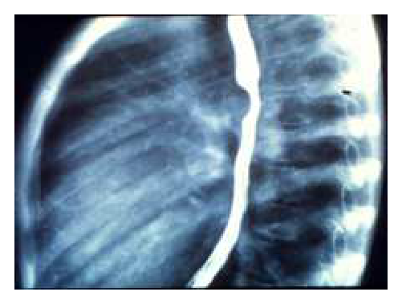
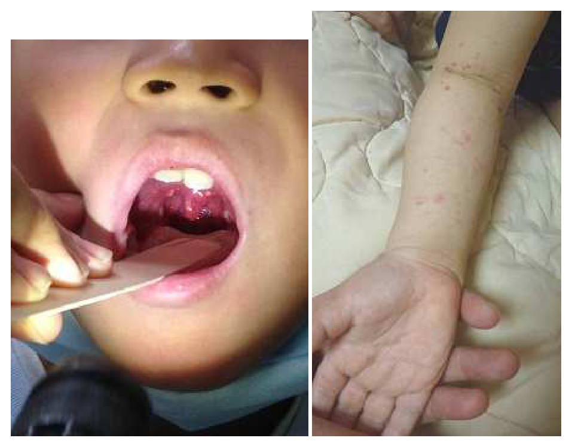
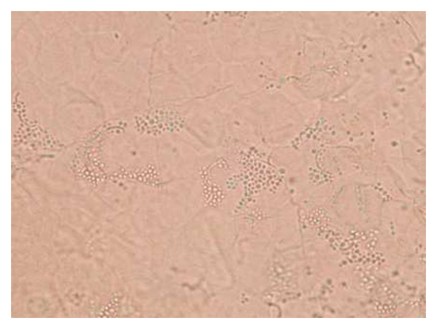
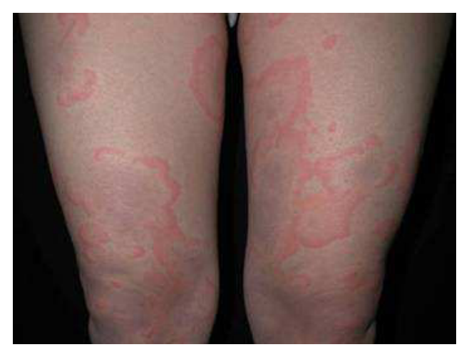
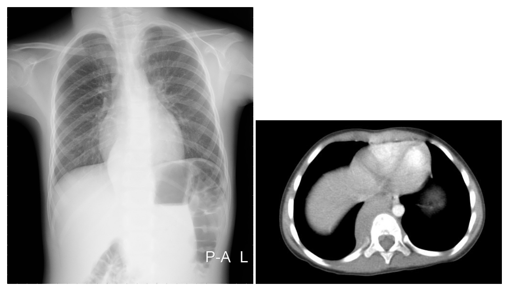
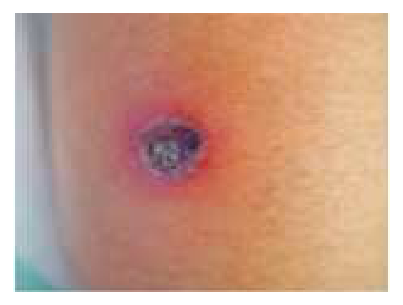

開卷有益 ／
醫師 ／ 醫學（四）（包括小兒科、皮膚科、神經科、精神科等科目及其相關臨床實例與醫學倫理） ／ 106 年第 1 次106 年第 1 次醫師醫學（四）（包括小兒科、皮膚科、神經科、精神科等科目及其相關臨床實例與醫學倫理）試題與答案
這一頁是民國 106 年第 1 次醫師醫學（四）（包括小兒科、皮膚科、神經科、精神科等科目及其相關臨床實例與醫學倫理）的整份歷屆試題，共 80 題，題目與標準答案出自考選部「國家考試試題及測驗式試題答案」開放資料，其中 80 題附有詳解。以下逐題列出題幹、選項與答案；要計時作答或記錄成績，請用線上練習。
考選部原始場次代碼：106020
線上作答這一科 →
全部 80 題
第 1 題
2個月大女嬰，咳嗽已有3個星期之久，近幾天甚至偶爾咳至唇色發紫，這陣子並無發燒現象。血液檢查WBC為26,500/mm3，neutrophil為25%，lymphocyte為70%，鼻咽檢體的RSV（respiratory syncytial virus）antigen檢查結果為陰性反應，其最有可能之致病菌為何？
（A） adenovirus（B） Bordetella pertussis（C） enterovirus（D） Streptococcus pneumoniae答案：（B）
詳解與考點 正解：嬰兒持續3週的陣發性咳嗽、咳至發紺、無發燒，以及明顯淋巴球增多；這組合典型指向百日咳。Bordetella pertussis 可造成嬰兒嚴重咳嗽與缺氧，周邊血常見白血球及淋巴球上升，故選 B。
A：adenovirus 常造成發燒、咽炎、結膜炎或下呼吸道感染，並非以長期陣發性咳嗽合併顯著淋巴球增多為典型。
C：enterovirus 的臨床表現較多樣，可有發燒、疹子、手足口病或腦膜炎，無法良好解釋本題的百日咳樣病程。
D：Streptococcus pneumoniae 常見為急性發燒性肺炎或中耳炎；它看似也是嬰兒呼吸道病原，但通常不會造成3週無熱的痙攣性咳嗽及淋巴球增多。
本題考點：百日咳（pertussis）——嬰兒可表現為陣發性咳嗽、發紺或呼吸暫停，且常有淋巴球增多（lymphocytosis）；病程與急性細菌性肺炎不同。
第 2 題
關於新生兒披衣菌感染（Chlamydia trachomatis）的肺炎，下列敘述何者錯誤？
（A） 常有嗜伊紅性白血球增多（eosinophilia）的現象（B） 聽診時常常可以聽到wheezing（C） 通常不會發燒（D） 可以用紅黴素（erythromycin）治療答案：（B）
詳解與考點 正解：問新生兒 Chlamydia trachomatis 肺炎的「錯誤」敘述。此病常在出生後數週出現無熱性、漸進性的咳嗽與呼吸急促，典型聽診較偏向細囉音而非支氣管痙攣表現；因此稱常可聽到 wheezing 並不典型，故選 B。
A：嗜伊紅性白血球增多（eosinophilia）是披衣菌肺炎常見的實驗室線索，敘述正確，故非答案。
C：此病通常不會發燒，與無熱性肺炎的典型表現相符，故非答案。
D：macrolide 類藥物可用於治療新生兒披衣菌感染，erythromycin 為可用選項之一，敘述正確，故非答案。
本題考點：新生兒披衣菌肺炎（Chlamydia trachomatis pneumonia）——常見無熱性肺炎、咳嗽、呼吸急促與嗜伊紅性白血球增多；須和以 wheezing 為主的細支氣管炎或氣喘表現區分。
第 3 題
15個月大的孩子，因為兩個月前得到川崎症（Kawasaki disease）而住院，且接受免疫球蛋白靜脈注射治療。現已康復，想要補打疫苗，下列何者為最適合接種的疫苗？
（A） 麻疹、德國麻疹、腮腺炎混合疫苗（B） 肺炎鏈球菌疫苗（C） 水痘疫苗（D） 口服輪狀病毒疫苗答案：（B）
詳解與考點 正解：孩子2個月前因川崎症接受靜脈注射免疫球蛋白（intravenous immunoglobulin, IVIG）。IVIG 的被動抗體會降低活性減毒疫苗的免疫反應，麻疹、德國麻疹、腮腺炎與水痘疫苗都應延後；肺炎鏈球菌疫苗屬非活性疫苗，不受此限制，最適合現在接種，故選 B。
A：麻疹、德國麻疹、腮腺炎混合疫苗是活性減毒疫苗，IVIG 後過早接種可能使疫苗病毒被中和而影響免疫效果。
C：水痘疫苗也是活性減毒疫苗，和（A）同樣應考量 IVIG 後的等待期，故目前不是最適合。
D：口服輪狀病毒疫苗雖為活性疫苗，但有嚴格月齡時程；15個月兒童已超出常規可開始或完成接種的年齡，故不適合。
本題考點：靜脈注射免疫球蛋白（IVIG）與疫苗——被動抗體可能干擾活性減毒疫苗（live attenuated vaccine）的免疫反應；非活性疫苗（inactivated vaccine）通常可依需要接種。
第 4 題
有一孕期28週出生的早產兒，出院後小寶寶之發展追蹤評估中，若有下列那一項發現，需轉介兒童發展聯合評估中心做進一步處置？
（A） 出生後2個月仍無有意義的微笑（smile）（B） 出生後5個月仍不會翻身（roll over）（C） 出生後2個月脖子仍無法穩定的撐起頭（D） 出生後13個月仍無法在輔助下以下肢支撐身體站立起來答案：（D）
詳解與考點 正解：28週早產兒的發展追蹤須以矯正年齡（corrected age）判讀。出生後13個月時，矯正年齡約為10個月；仍無法在輔助下以雙下肢承重，提示粗大動作發展明顯落後，應轉介聯合評估，故選 D。
A：出生後2個月的矯正年齡仍接近足月新生兒，尚未有有意義微笑不能單獨判定異常。
B：出生後5個月約相當於矯正年齡2個月，不會翻身仍可在可接受的發展範圍內。
C：出生後2個月的矯正年齡接近足月，頭部控制尚未成熟，不能穩定抬頭不足以立即判定需轉介。
本題考點：早產兒矯正年齡（corrected age）——評估早產兒早期里程碑時，應以預產期校正年齡；粗大動作延遲（gross motor delay）需及早轉介發展評估。
第 5 題
新生男嬰，呈現肌張力不足（hypotonia）、餵食困難，膚色較白且有雙側隱睪，手掌、腳掌都比較小，造成他異常最可能的原因是：
（A） 染色體之微缺失（microdeletion）（B） 染色體複製時易位（translocation）（C） 性染色體異常（D） 生產傷害答案：（A）
詳解與考點 正解：新生兒肌張力不足、餵食困難、膚色較白、雙側隱睪與小手小腳，為 Prader-Willi syndrome 的典型早期組合。此症多與父源15號染色體特定區域缺失或印記異常相關，考題所對應的致病機轉是染色體微缺失（microdeletion），故選 A。
B：染色體易位（translocation）可造成多種染色體疾病，但不是 Prader-Willi syndrome 最具代表性的機轉。
C：性染色體異常可造成性腺發育或生長問題，卻無法比微缺失更完整解釋本題的嬰兒期低張力、餵食困難與肢端較小。
D：生產傷害可造成局部神經損傷或急性神經學異常，但不能解釋先天的多系統表徵與雙側隱睪。
本題考點：Prader-Willi syndrome——嬰兒期以肌張力不足（hypotonia）和餵食困難為要點，常有性腺功能低下與小手小腳；基因機轉常涉及15號染色體區域的微缺失（microdeletion）或基因印記（genomic imprinting）異常。
第 6 題
有關Apgar score的敘述，下列何者正確？
（A） Apgar score分數愈低表示嬰兒愈健康（B） 呼吸是嬰兒Apgar score的重要指標之一（C） 出生1分鐘時嬰兒的Apgar score比5分鐘的Apgar score更與預後有關（D） 母親使用硫酸鎂不會影響嬰兒Apgar score答案：（B）
詳解與考點 正解：Apgar score 的組成項目。Apgar 由膚色、心率、反射刺激反應、肌張力與呼吸5項評估，因此呼吸確是重要指標之一，故選 B。
A：Apgar 分數愈高代表出生後適應情況愈佳；低分提示可能需要復甦與持續評估，敘述方向相反。
C：出生後5分鐘的 Apgar score 較1分鐘分數更能反映復甦後的持續狀況及預後關聯；1分鐘分數主要用來評估出生當下是否需立即處置。
D：母親使用硫酸鎂可能使新生兒暫時肌張力下降或呼吸抑制，因而影響 Apgar score，不能說不會影響。
本題考點：Apgar score——以 Appearance、Pulse、Grimace、Activity、Respiration 五項快速評估新生兒出生後適應；5分鐘分數（5-minute Apgar score）較適合追蹤初步復甦後狀態。
第 7 題
兒童出現下列何種症狀時，不需要考慮有腎臟疾病的存在？
（A） 長期小便有泡泡（foamy urine）（B） 多尿（polyuria）（C） 生長遲滯（growth retardation）（D） 尿道口疼痛（pain of urethral orifice）答案：（D）
詳解與考點 正解：「不需要考慮腎臟疾病」的症狀。尿道口疼痛較指向局部尿道、外陰部刺激或發炎，單獨出現時並非腎臟疾病的典型警訊，故選 D。
A：長期泡泡尿可能反映蛋白尿（proteinuria），應考慮腎絲球疾病或其他腎臟病變。
B：多尿（polyuria）可能與腎臟濃縮功能異常、腎小管疾病或慢性腎病相關，需進一步評估。
C：生長遲滯（growth retardation）可見於慢性腎臟病，與營養、酸鹼平衡及內分泌失調有關，是重要的全身性線索。
本題考點：兒童腎臟疾病警訊（renal disease warning signs）——泡泡尿提示蛋白尿，多尿可反映濃縮功能異常，生長遲滯應考慮慢性腎臟病；局部尿道口疼痛須先思考下泌尿道問題。
第 8 題
舟形頭（scaphocephaly）是因那一個骨縫先天性過早癒合所導致？
（A） sagittal suture（B） lambdoid suture（C） coronal suture（D） metopic suture答案：（A）
詳解與考點 正解：舟形頭（scaphocephaly），其頭顱呈前後狹長、兩側較窄，是矢狀縫過早癒合所致。矢狀縫（sagittal suture）限制頭顱橫向生長，代償性前後延長形成舟形頭，故選 A。
B：lambdoid suture 過早癒合較造成後頭部不對稱或後斜頭畸形，非典型舟形頭。
C：coronal suture 過早癒合可造成前斜頭畸形；若雙側受影響，可能使頭顱前後徑較短而呈短頭畸形。
D：metopic suture 過早癒合常造成三角頭畸形（trigonocephaly），前額呈三角形，並非舟形頭。
本題考點：顱縫早閉症（craniosynostosis）——舟形頭（scaphocephaly）對應矢狀縫（sagittal suture）早閉；不同顱縫早閉會造成可辨識的頭形改變。
第 9 題
下列那一項檢查與生長激素缺乏症（growth hormone deficiency）的診斷無關？
（A） 血清第1型似胰島素生長因子（insulin-like growth factor-1, IGF-I）濃度（B） 血清第3型似胰島素生長因子結合蛋白（insulin-like growth factor binding protein 3, IGF-BP3）濃度（C） 升糖素刺激試驗（glucagon stimulation test）（D） 葡萄糖耐受性試驗（glucose tolerance test）答案：（D）
詳解與考點 正解：問何者與生長激素缺乏症診斷「無關」。診斷會參考 IGF-I、IGF-BP3 等生長激素作用的周邊指標，並以刺激試驗評估生長激素分泌；葡萄糖耐受性試驗主要評估葡萄糖代謝與糖尿病，非生長激素缺乏的診斷工具，故選 D。
A：IGF-I 受生長激素調控，雖須合併年齡、營養與臨床生長情形解讀，仍是初步評估的重要檢查。
B：IGF-BP3 亦受生長激素軸影響，對年幼兒童的生長激素軸篩檢有輔助價值。
C：升糖素刺激試驗（glucagon stimulation test）可作為生長激素刺激試驗之一，用以評估分泌反應。
本題考點：生長激素缺乏症（growth hormone deficiency）——以生長曲線、IGF-I、IGF-BP3 與生長激素刺激試驗（growth hormone stimulation test）綜合判讀；葡萄糖耐受性試驗（glucose tolerance test）不屬其診斷核心。
第 10 題
8歲氣喘男童，最近3個月內，於白天出現氣喘症狀的次數平均一星期少於1次，一個月內半夜因咳嗽而醒來也少於2次，其FEV1＞80%的預測值，給與下列何種藥物最適當？
（A） 吸入型短效支氣管擴張劑（inhaled short-acting β2 agonist）（B） 吸入型長效支氣管擴張劑（inhaled long-acting β2 agonist）（C） 吸入型類固醇（inhaled corticosteroid）（D） 吸入型類固醇倂用口服白三烯素受體結抗劑（inhaled corticosteroid + oral leukotriene receptor antagonist）本題送分，無標準答案
詳解與考點 本題經考選部公告一律給分。作答任一選項皆得分。原因是兒童輕度間歇性氣喘的治療建議會隨指引版本調整，且題幹未提供過去急性惡化、暴露風險、吸入技術與依從性。較早的症狀分級可支持（A）按需短效支氣管擴張劑，重視抗發炎預防的作法又可能選擇含吸入型類固醇的策略；採用何種時點的標準不確定，故送分。
A：依以症狀頻率與 FEV1 分階的傳統階梯治療，白天與夜間症狀都少、肺功能正常時，可使用按需吸入型短效 β2 agonist。
B：吸入型長效 β2 agonist 不宜單獨作為兒童氣喘的基礎治療；它通常必須與抗發炎控制藥物的策略一併考量。
C：吸入型類固醇可降低氣道發炎與急性惡化風險。若病史顯示風險較高或採用較重視抗發炎預防的治療觀點，它可能合理，但題幹沒有交代給藥方式與風險資料。
D：吸入型類固醇再合併口服白三烯素受體拮抗劑屬較高強度的控制策略，僅由題示的低頻症狀不易支持，除非另有控制不佳或共病資訊。
本題考點：兒童氣喘（childhood asthma）的症狀控制（symptom control）與未來急性惡化風險要分開評估；階梯治療（stepwise therapy）會受指引時點與個別風險影響。
第 11 題
兒童的感染性關節炎（infective arthritis），最常見的菌種為：
（A） 金黃色葡萄球菌（Staphylococcus aureus）（B） 大腸桿菌（Escherichia coli）（C） 沙門氏菌（Salmonella species）（D） 黴漿菌（Mycoplasma pneumoniae）答案：（A）
詳解與考點 正解：兒童感染性關節炎最常見的致病菌。各年齡層的比例雖有差異，但整體最常見的是金黃色葡萄球菌（Staphylococcus aureus），故選 A。它具侵襲性且容易經血行散播至骨與關節。
B：Escherichia coli 可在新生兒或泌尿生殖道相關感染中致病，但不是兒童感染性關節炎整體最常見的菌種。
C：Salmonella species 在鐮刀型紅血球疾病等特定宿主較需考慮，但一般兒童不是最常見病原。
D：Mycoplasma pneumoniae 主要造成呼吸道感染，並非急性細菌性關節炎的典型常見病原。
本題考點：感染性關節炎（septic arthritis）——兒童最常見病原為金黃色葡萄球菌（Staphylococcus aureus）；遇特殊宿主時再依病史調整對 Salmonella 等病原的考量。
第 12 題
下列何者不屬於先天性血小板缺乏（congenital thrombocytopenia）的疾病？
（A） Wiskott-Aldrich syndrome（B） neonatal alloimmune thrombocytopenic purpura（C） amegakaryocytic thrombocytopenia（D） Fanconi anemia答案：（B）
詳解與考點 正解：「不屬於先天性血小板缺乏」；neonatal alloimmune thrombocytopenic purpura 是母體對胎兒血小板抗原產生抗體，抗體經胎盤造成新生兒血小板破壞的免疫性疾病，並非嬰兒自身先天造血異常，故選 B。
A：Wiskott-Aldrich syndrome 是遺傳性疾病，可出現先天性血小板減少及小血小板，屬先天性血小板異常的鑑別。
C：amegakaryocytic thrombocytopenia 的核心為巨核細胞發育或生成異常，屬先天性血小板生成不足。
D：Fanconi anemia 是遺傳性骨髓衰竭症候群，可造成多系血球低下，包括血小板減少，屬先天性疾病。
本題考點：新生兒同種免疫性血小板減少症（neonatal alloimmune thrombocytopenia）——由母體抗體介導的血小板破壞；須與遺傳性骨髓衰竭（inherited bone marrow failure）及先天血小板生成異常區分。
第 13 題
2個月大的女嬰，出生後不久即被發現呼吸急促合併喘鳴聲（stridor），氣管鏡檢查發現氣管狹窄，食道攝影如圖所示。下列何者為最可能的診斷？

（A） 雙主動脈弓（double aortic arch）（B） 右主動脈弓併左開放性動脈導管（right aortic arch & left PDA）（C） 肺動脈吊帶（pulmonary sling）（D） 持續第五動脈弓（persistent fifth arch）答案：（C）
詳解與考點 正解：圖中食道鋇劑柱可見前方受壓造成的凹陷。肺動脈吊帶（pulmonary sling）是左肺動脈異常自右肺動脈發出，經氣管與食道之間走向左側，因此同時壓迫氣管與食道；嬰兒早期即有喘鳴與氣管狹窄，配合食道前方壓痕，最符合（C）肺動脈吊帶。
A：雙主動脈弓（double aortic arch）形成完整血管環，常使食道在正面影像呈雙側壓痕，且可造成後方壓迫；本圖以前方食道壓痕為主，較不符合。
B：右主動脈弓併左開放性動脈導管（right aortic arch & left PDA）亦可形成血管環，但主動脈弓相關血管多自後方壓迫食道，與圖示前方壓痕及肺動脈吊帶的典型走行不符。
D：持續第五動脈弓（persistent fifth arch）是罕見主動脈弓發育異常，本身不會典型地在氣管與食道間形成左肺動脈通道，無法適切解釋嬰兒的氣管狹窄與圖中食道前方受壓。
本題考點：肺動脈吊帶（pulmonary sling）——異位左肺動脈自右肺動脈發出，穿行於氣管與食道間，造成氣管受壓、喘鳴及食道前方壓痕；血管環（vascular ring）的食道攝影可依壓痕方向協助鑑別。
第 14 題
特定疾病或狀況，容易造成兒童阻塞性呼吸暫停（obstructive sleep apnea）或換氣不足（hypoventilation），導致睡眠障礙、生長不良，甚至腦缺氧，下列何者最不可能？
（A） achondroplasia合併midface hypoplasia（B） 腭裂（cleft palate）尚未經手術修補（C） Pierre-Robin sequence合併 micrognathia（D） Prader-Willi syndrome併發肥胖（obesity）答案：（B）
詳解與考點 正解：問最不可能造成兒童阻塞性呼吸暫停或換氣不足的狀況。未修補腭裂主要造成口鼻腔相通、餵食與語音問題，本身通常不是上呼吸道阻塞或睡眠低通氣的典型主因，故選 B。
A：achondroplasia 合併 midface hypoplasia 可使顏面中段及上呼吸道空間狹窄，增加睡眠呼吸障礙風險。
C：Pierre-Robin sequence 的小下顎（micrognathia）可使舌根後墜，造成上呼吸道阻塞，尤其在嬰幼兒更需注意。
D：Prader-Willi syndrome 併發肥胖時，可因肥胖及肌張力低下增加阻塞性睡眠呼吸暫停與低通氣風險。
本題考點：兒童睡眠呼吸障礙（sleep-disordered breathing）——顱顏結構狹窄、下顎小、肌張力不足與肥胖都是阻塞性睡眠呼吸暫停（obstructive sleep apnea）的重要危險因子。
第 15 題
2歲女童，就診主訴為發高燒3天，喉嚨痛、口水直流，媽媽發現女童的手腳出現許多紅疹，同時女童這兩天幾乎無法進食，尿量明顯減少。身體診察發現喉嚨軟顎上出現水疱，手掌、腳掌、臀部也出現疹子（如圖所示），下列敘述何者錯誤？

（A） 腸病毒引起的手足口症的典型表現（B） 治療的首選藥物是Acyclovir（C） 腸病毒71型較易引起重症（D） 腸病毒的傳染途徑，主要經由糞口傳染或藉由呼吸道分泌物傳播答案：（B）
詳解與考點 正解：此女童高燒、口腔軟顎水疱、手掌與腳掌紅疹，且圖中可見口腔潰瘍樣病灶與前臂、手掌的散在紅色丘疹，合併臀部疹子，符合腸病毒造成的手足口症（hand-foot-and-mouth disease）。手足口症通常採支持性治療，包括補充水分、退燒與止痛；acyclovir 是針對疱疹病毒的抗病毒藥，對腸病毒無效，因此（B）「治療的首選藥物是 Acyclovir」錯誤，故選 B。
A：腸病毒手足口症的典型表現為發燒、口腔疼痛性水疱或潰瘍，以及手掌、腳掌、臀部等處的丘疹或水疱；本題症狀、分布與圖片所示皆相符，敘述正確，故非答案。
C：腸病毒71型（enterovirus 71, EV71）相較其他常見腸病毒，較可能造成腦幹腦炎、腦炎、肺水腫或心肺衰竭等重症併發症；幼童高燒時須留意嗜睡、持續嘔吐、肌躍型抽搐與呼吸急促等警訊，故敘述正確。
D：腸病毒可經糞口途徑傳播，也可藉由呼吸道分泌物、飛沫及接觸受污染物品傳播；病童與照顧者應加強正確洗手及環境清潔，敘述正確。
本題考點：手足口症（hand-foot-and-mouth disease）常見口腔水疱／潰瘍合併手、足、臀部皮疹，治療以支持性照護（supportive care）為主；腸病毒71型（enterovirus 71, EV71）是須警覺神經與心肺重症的病原；腸病毒（enterovirus）主要可經糞口及呼吸道分泌物傳播。
第 16 題
新生兒由於子宮內生長遲滯（intrauterine growth retardation），腦部超音波（brain ultrasonography）檢查發現，有腦室週邊鈣化（periventricular calcification）與腦室擴大（ventriculomegaly）的異常，聽力篩檢亦出現異常。此新生兒最可能的診斷為：
（A） congenital human parvovirus B19 infection（B） congenital rubella syndrome（C） congenital human herpes simplex virus infection（D） congenital cytomegalovirus infection答案：（D）
詳解與考點 正解：子宮內生長遲滯合併腦室週邊鈣化、腦室擴大及聽力篩檢異常。先天性巨細胞病毒感染（congenital cytomegalovirus infection）典型可造成腦室週邊鈣化、腦部發育異常與感音性聽力損失，故選 D。
A：congenital human parvovirus B19 infection 較典型的嚴重胎兒表現是貧血、心衰竭與胎兒水腫，非腦室週邊鈣化合併聽力異常。
B：congenital rubella syndrome 可有白內障、心臟病與聽力損失；它看似能解釋聽損，但腦室週邊鈣化更支持先天性 CMV。
C：congenital human herpes simplex virus infection 可有皮膚、眼睛與中樞神經侵犯，但不是本題所示鈣化位置與聽損組合的典型診斷。
本題考點：先天性巨細胞病毒感染（congenital cytomegalovirus infection）——重要線索為腦室週邊鈣化（periventricular calcification）、腦室擴大與感音性聽力損失（sensorineural hearing loss）；屬先天感染（congenital infection）的經典鑑別。
第 17 題
先天性橫膈膜疝氣（congenital diaphragmatic hernia），最有可能併發的嚴重問題為何？
（A） 肺臟發育不全（pulmonary hypoplasia）（B） 先天性心臟病（congenital heart disease）（C） 食道閉鎖氣管食道廔管（esophageal atresia with tracheoesophageal fistula）（D） 後鼻孔閉鎖 （choanal atresia）答案：（A）
詳解與考點 正解：先天性橫膈膜疝氣使腹腔臟器進入胸腔、壓迫胎兒肺部發育。最嚴重且最直接的併發問題是肺臟發育不全（pulmonary hypoplasia），並常伴隨肺血管床不足與肺高壓，故選 A。
B：先天性心臟病可與部分先天異常共存，但不是橫膈膜疝氣最典型、最直接造成的嚴重問題。
C：食道閉鎖合併氣管食道廔管是另一類前腸發育異常，不能由橫膈膜疝氣的胸腔壓迫機轉推得。
D：後鼻孔閉鎖造成上呼吸道阻塞，與橫膈膜缺損導致的肺部受壓發育不全屬不同病理。
本題考點：先天性橫膈膜疝氣（congenital diaphragmatic hernia）——腹腔臟器疝入胸腔會妨礙肺發育，造成肺臟發育不全（pulmonary hypoplasia）與肺高壓（pulmonary hypertension）。
第 18 題
Hepatoportoenterostomy procedure 是治療膽道閉鎖（biliary atresia）病童的重要方法，下列何種情形，可預期手術後的預後較差？
（A） 手術後四週大便為深黃色（B） 病理檢查顯微鏡下膽小管管徑小於100µm（C） 出生後6週內接受手術（D） 血型為O型答案：（B）
詳解與考點 正解：膽道閉鎖接受 hepatoportoenterostomy 後，何者預示預後較差。肝門區殘存膽小管管徑小於100 µm，表示可供引流的膽管發育較差，膽汁引流成功機會較低，故選 B。
A：術後大便由灰白轉為深黃色，表示膽汁較可能已進入腸道，是較有利的膽汁引流線索，而非不良預後。
C：越早在適當時機接受手術，通常越有利於恢復膽汁引流；出生後6週內手術因此不是本題的不良因子。
D：血型 O 型不是判斷 hepatoportoenterostomy 預後的主要病理或臨床指標。
本題考點：膽道閉鎖（biliary atresia）與 Kasai 手術（hepatoportoenterostomy）——預後與肝門殘存膽管（residual bile duct）發育及術後膽汁引流密切相關；糞便轉黃是膽汁進入腸道的臨床線索。
第 19 題
下列導致兒童患門脈高壓（portal hypertension）的疾病，何者預後最差？
（A） 肝外門靜脈栓塞（extrahepatic portal vein obstruction）（B） 新生兒曾插入臍靜脈管（catheterization of umbilical vein）（C） 硬化性膽管炎（sclerosing cholangitis）（D） 脾臟動靜脈瘻管（splenic arteriovenous fistula）答案：（C）
詳解與考點 正解：兒童門脈高壓中何者預後最差。硬化性膽管炎是進行性的膽管發炎與纖維化疾病，可演變為膽汁鬱積、肝纖維化與肝硬化；門脈高壓反映的是進行性肝臟病，因此整體預後較差，故選 C。
A：肝外門靜脈栓塞主要造成肝前型門脈高壓，肝實質功能往往相對保留，預後通常較肝硬化性疾病佳。
B：新生兒臍靜脈導管置放可能是後續肝外門靜脈栓塞的危險因子，但它本身不是決定預後最差的進行性肝病。
D：脾臟動靜脈瘻管可增加門靜脈血流並造成門脈高壓，但若能處理血流異常，與進行性膽管及肝實質病變相比預後較可能改善。
本題考點：門脈高壓（portal hypertension）的病因分層——肝前型阻塞（prehepatic obstruction）常保留肝功能；進行性膽管與肝纖維化疾病（sclerosing cholangitis）則有肝硬化與肝衰竭風險。
第 20 題
關於食道弛緩不能（achalasia），下列敘述何者錯誤？
（A） 特徵為缺乏食道蠕動，下食道括約肌無法完全放鬆，進而增加下食道括約肌的壓力（B） 臨床表現有嘔吐、吞嚥困難、體重減輕、胸痛、逆流及咳嗽等（C） 食道壓力檢測（manometry）可協助診斷（D） 以內視鏡注射肉毒桿菌毒素（botulinum toxin）可完全治癒答案：（D）
詳解與考點 正解：問食道弛緩不能的錯誤敘述。內視鏡注射肉毒桿菌毒素可暫時降低下食道括約肌張力、改善吞嚥困難，但效果可能隨時間減弱，不能宣稱可完全治癒，故選 D。
A：食道弛緩不能的核心異常是食道蠕動缺乏與下食道括約肌無法適當放鬆，因而使括約肌壓力增高，敘述正確。
B：吞嚥困難、逆流、胸痛、體重減輕、咳嗽與嘔吐都可見於食物滯留及逆流所造成的臨床表現，敘述正確。
C：食道壓力檢測（manometry）可顯示蠕動缺乏及下食道括約肌鬆弛異常，是協助診斷的重要檢查，敘述正確。
本題考點：食道弛緩不能（achalasia）——病理核心為食道蠕動消失（aperistalsis）及下食道括約肌放鬆障礙；肉毒桿菌毒素（botulinum toxin）注射是症狀緩解治療，不是根治性治療。
第 21 題
下列引起兒童泌尿道感染（urinary tract infection）的細菌，何者最為罕見？
（A） Streptococcus spp.（B） Escherichia coli（C） Klebsiella spp.（D） Proteus spp.答案：（A）
詳解與考點 正解：兒童泌尿道感染最罕見的細菌。Escherichia coli 是最常見病原，Klebsiella 與 Proteus 也都是腸道革蘭陰性桿菌，可造成泌尿道感染；Streptococcus spp. 相對罕見，故選 A。
B：Escherichia coli 是兒童泌尿道感染最常見的致病菌，與題目所問的「最罕見」相反。
C：Klebsiella spp. 雖遠少於 E. coli，仍是可見的革蘭陰性泌尿道病原，不是四者中最罕見。
D：Proteus spp. 亦可造成兒童泌尿道感染，尤其在某些泌尿道結構或結石相關情境更需考慮；它看似較不常見，但仍比 Streptococcus spp. 更符合常見泌尿道病原的範圍。
本題考點：兒童泌尿道感染（urinary tract infection）病原——以腸道革蘭陰性桿菌（enteric Gram-negative bacilli）為主，最常見為 Escherichia coli；Streptococcus spp. 並非典型常見病原。
第 22 題
5歲男童因為腹瀉3天，有脫水現象被送到急診。抽血檢查發現，血清鈉離子：142 mEq/L，鉀離子：3.6 mEq/L，氯離子：115mEq/L，肌酐酸（creatinine）：1.1 mg/dL。動脈血液氣體分析為pH=7.12，PCO2=50 mmHg，HCO3-=14 mmol/L。下列何者正確？
（A） normal anion gap metabolic acidosis with respiratory acidosis（B） high anion gap metabolic acidosis with respiratory acidosis（C） normal anion gap metabolic acidosis with respiratory compensation（D） normal anion gap metabolic acidosis with respiratory alkalosis本題送分，無標準答案
詳解與考點 本題經考選部公告一律給分。依數值計算陰離子間隙約為13 mEq/L，位於多數教材正常範圍（8–12或8–16）邊界，致(A)「normal anion gap」與(B)「high anion gap」何者正確因採用版本不同而生分歧；PCO2 50 mmHg遠高於Winter's formula預期代償值（約29 mmHg），顯示合併呼吸性酸中毒而非單純代償，故(C)「呼吸性代償」與(D)「呼吸性鹼中毒」皆與計算結果不符，可先排除。此類拉肚子脫水兒童常因呼吸疲乏或中樞抑制導致CO2蓄積，屬病生理上合理之合併症。作答以現行酸鹼平衡分析（Winter's formula與陰離子間隙定義）教材為準。
第 23 題
有關單純型熱性痙攣（simple febrile seizure）的敘述，下列何者錯誤？
（A） 可發生在發展正常的幼兒（B） 家族中有熱性痙攣病史的機率較一般人高（C） 重複發作的病兒須長期服用癲癇藥物（D） 抽搐發作時間少於15分鐘答案：（C）
詳解與考點 正解：「單純型」熱性痙攣（simple febrile seizure）的良性定義；即使日後重複發作，通常也不需為預防而長期使用抗癲癇藥物。此類痙攣多見於原本發展正常的幼兒，發作短暫、全身性，重點處置是評估發燒原因與必要時處理急性發作，而非以慢性抗癲癇藥預防復發。長期用藥的副作用與預防效益不相稱，故錯誤的是 C。
A：單純型熱性痙攣發生於原本神經發展正常的兒童，這正是其典型臨床背景，敘述正確，故不是本題答案。
B：熱性痙攣有家族聚集傾向；有家族史會提高發生機率，敘述正確。
D：單純型熱性痙攣的單次發作通常少於 15 分鐘；超過此時間是複雜型熱性痙攣（complex febrile seizure）的警訊之一，故此項正確。
本題考點：單純型熱性痙攣（simple febrile seizure）——發生於發展正常兒童、常為短暫全身性發作；複雜型熱性痙攣（complex febrile seizure）的判準包括局灶性、持續≥15 分鐘或 24 小時內重複發作；日後在另一發燒病程再發仍可能是單純型；預防性長期抗癲癇治療（long-term antiseizure medication）通常不適用。
第 24 題
一個孩子會跑、會正確的指認身體每個部位，依照正常的發展里程，此兒童最接近的年齡為何？
（A） 2歲（B） 1歲（C） 1歲6個月（D） 9個月本題送分，無標準答案
詳解與考點 本題經考選部公告一律給分。「會跑」與「能正確指認身體部位」之發展里程碑，各版兒童發展量表所載年齡不盡相同：部分教材列於(C)1歲6個月，另有教材列於(A)2歲方臻成熟穩定，兩者皆有版本依據，致答案分歧。(B)1歲、(D)9個月則明顯過早，一般幼兒尚未能跑且語言指認能力未成熟，應可排除。作答以現行兒童發展評估教材為準。
第 25 題
正常新生兒，促甲狀腺素（thyroid-stimulating hormone, TSH）之敘述，下列何者錯誤？
（A） 足月新生兒在出生30分鐘內， TSH最高可到達20 mIU/L（B） TSH在出生24小時後快速減少（C） TSH在出生後五天呈現＜10 mIU/L（D） 經過新生兒期（neonatal period）之後，TSH ＜6 mIU/L答案：（A）
詳解與考點 正解：官方答案為 A。足月兒在出生後不久會出現顯著、短暫的 TSH 上升，並非最高只到 20 mIU/L。這波上升可刺激甲狀腺素分泌以適應出生後環境，之後 TSH 逐日下降；因此（A）把出生早期最高值定得過低，是錯誤敘述。
B：出生後的 TSH 高峰是短暫現象，約 24 小時後即明顯下降，敘述符合生理變化，故非答案。
C：依本題教材的日齡別判準，第 5 日 TSH 可降至＜10 mIU/L；實際參考區間仍會受日齡與檢驗方法影響。
D：依本題教材的日齡別判準，新生兒期後 TSH<6 mIU/L；實際參考區間仍會受日齡與檢驗方法影響。
本題考點：新生兒甲狀腺功能（neonatal thyroid function）——出生後會有生理性促甲狀腺素高峰（physiologic TSH surge），解讀新生兒篩檢時須區分採檢時間與持續性 TSH 升高。
第 26 題
14歲男童患有氣喘，醫師希望以吸入型類固醇（inhaled corticosteroid, ICS）來控制其病情，有關吸入型類固醇（ICS）之使用，下列何者錯誤？
（A） ICS是所有類型的氣喘病人的第一線控制型用藥（B） 適當使用ICS，可減少氣喘病人的死亡率（C） ICS的使用，可能引起該病童發生聲音沙啞及咽喉黴菌感染（D） 使用吸藥輔助艙（spacer），可減少咽喉黴菌感染的發生答案：（A）
詳解與考點 正解：官方答案為 A，係依出題年代對「每日 ICS 單方控制藥」的舊式階梯分類而判定。惟現行青少年氣喘治療建議使用含 ICS 的治療方案，輕症也可採需要時低劑量 ICS-formoterol；因此不宜將本題舊式答案視為現行治療定論。
B：規律且適當使用 ICS 能降低氣道發炎與嚴重惡化風險，進而降低氣喘相關死亡風險，敘述正確，故非答案。
C：吸入藥物沉積於口咽部時，可能造成聲音沙啞與口咽念珠菌感染，這是 ICS 常見的局部不良反應，敘述正確。
D：使用吸藥輔助艙（spacer）可減少藥物留在口咽部的比例，因此有助降低口咽念珠菌感染；它看似只是改善吸入技巧，實際也能減少局部副作用，故正確。
本題考點：吸入型類固醇（inhaled corticosteroid, ICS）——為氣喘抗發炎控制治療的重要藥物，但採階梯式治療（stepwise therapy）；口咽念珠菌感染（oropharyngeal candidiasis）可藉 spacer 與吸藥後漱口減少。
第 27 題
有關Bruton agammaglobulinemia的特徵，下列何者錯誤？
（A） 為體染色體顯性遺傳（autosomal dominant inheritance）疾病，且血中CD19陽性的B細胞通常小於1%（B） 血中IgG、IgA、IgE濃度很低（C） 容易有反覆性細菌性肺炎、中耳炎及鼻竇炎（D） 反覆性細菌性感染常在嬰兒期 6個月後出現答案：（A）
詳解與考點 正解：Bruton agammaglobulinemia，即 X-linked agammaglobulinemia（XLA）；其病因是 BTK 基因異常造成 B 細胞成熟障礙，遺傳型式為 X 連鎖隱性，而非體染色體顯性。血中 CD19 陽性 B 細胞極少這個部分雖像 XLA，卻不能挽救前半句的遺傳型式錯誤，故 A 錯。
B：因 B 細胞成熟受阻，XLA 患者的各類免疫球蛋白，包括 IgG、IgA 與 IgE，均會明顯偏低，敘述正確。
C：抗體缺乏使患者容易反覆罹患化膿性細菌感染，常見肺炎、中耳炎與鼻竇炎，敘述正確。
D：母體 IgG 在出生後最初數月仍可提供保護；保護逐漸消退後，反覆細菌感染常在約 6 個月大以後浮現，敘述正確。
本題考點：X 連鎖無丙種球蛋白血症（X-linked agammaglobulinemia, XLA）——BTK 缺陷使 B 細胞成熟失敗；CD19 陽性 B 細胞與免疫球蛋白低下；母體抗體消退後出現反覆細菌感染。
第 28 題
有關兒童白血病的敘述，下列何者錯誤？
（A） 慢性骨髓性白血病（chronic myelogenous leukemia，CML）在兒童發生的比率，相對於成人是非常低的（B） 兒童慢性骨髓性白血病（CML）大部分都有 t（9；22）（q34；q11）的染色體易位，因而產生了費城染色體（Philadelphiachromosome）（C） 過去兒童慢性骨髓性白血病（CML）的預後並不好，必需盡早接受幹細胞移植，但自從有了基利克（imatinib, gleevec®）的問世，預後已顯著改善（D） 和慢性骨髓性白血病（CML）相反，急性淋巴性白血病（acute lymphoblastic leukemia, ALL）患童，若有 t（9；22） 的染色體易位，會有較佳的預後答案：（D）
詳解與考點 正解：ALL 的 t（9；22）費城染色體；在急性淋巴性白血病（acute lymphoblastic leukemia, ALL）中，BCR-ABL1 陽性屬較高風險特徵，並非較佳預後。因此 D 的預後方向顛倒，是錯誤敘述。
A：兒童 CML 遠比成人少見，敘述正確，故不是本題答案。
B：兒童 CML 多具有 t（9；22）（q34；q11）所形成的費城染色體，產生 BCR-ABL1 融合基因，敘述正確。
C：酪胺酸激酶抑制劑（tyrosine kinase inhibitor）如 imatinib 改變了 CML 的治療與預後，使許多患者不再以一開始即接受幹細胞移植為唯一策略；此項正確。
本題考點：費城染色體（Philadelphia chromosome）與 BCR-ABL1——是慢性骨髓性白血病（chronic myelogenous leukemia, CML）的核心分子異常；在急性淋巴性白血病（acute lymphoblastic leukemia, ALL）中則是高風險預後因子。
第 29 題
有關兒童白血病治療的預後因子（prognostic factor），下列何者是較好的（favorable）預後因子？
（A） 有t（12；21）的染色體易位（B） 年齡小於1歲（C） 有t（4；11）的染色體易位（D） 骨髓細胞染色體數目小於44個（hypodiploidy）答案：（A）
詳解與考點 正解：兒童 ALL 的細胞遺傳學預後分層；t（12；21）常形成 ETV6-RUNX1 融合基因，屬較佳預後因子，故選 A。它看似只是另一種染色體易位，但不同易位代表不同白血病生物學與復發風險，不能一概視為不良。
B：嬰兒期發病，尤其小於 1 歲，常合併較具侵襲性的生物學特徵，屬不良預後因子，故非答案。
C：t（4；11）常與 KMT2A 重排相關，特別見於嬰兒 ALL，為較不良的預後特徵，故非答案。
D：低二倍體（hypodiploidy）代表白血病細胞染色體數目偏低，與較差治療反應及預後相關，故非答案。
本題考點：急性淋巴性白血病（acute lymphoblastic leukemia, ALL）預後因子——ETV6-RUNX1/t（12；21）為較佳細胞遺傳學特徵；KMT2A 重排與低二倍體（hypodiploidy）屬不良風險線索。
第 30 題
下列血液中電解質的異常，常會使嬰幼兒心電圖出現QT波之延長（QT Prolongation）的現象，除了：
（A） 低血鉀症（hypokalemia）（B） 低血鈉症（hyponatremia）（C） 低血鎂症（hypomagnesemia）（D） 低血鈣症（hypocalcemia）答案：（B）
詳解與考點 正解：題幹問「除了」，要找通常不會造成 QT 延長的電解質異常。心室復極時間主要受鉀、鎂、鈣影響；低血鉀、低血鎂與低血鈣皆可延長 QT 或增加相關心律不整風險，而低血鈉通常不以 QT 延長為典型心電圖表現，故選 B。
A：低血鉀症（hypokalemia）會影響心肌復極，常見 ST 段壓低、T 波變平與 U 波，並可造成量測上的 QU 延長及心律不整風險，故非答案。
C：低血鎂症（hypomagnesemia）會增加復極不穩定與 torsades de pointes 風險，常與 QT 延長的臨床情境相關，故非答案。
D：低血鈣症（hypocalcemia）會延長心室動作電位的平台期，主要使 ST 段延長，因此 QT 延長，敘述正確。
本題考點：QT 延長（QT prolongation）——低血鉀症（hypokalemia）、低血鎂症（hypomagnesemia）與低血鈣症（hypocalcemia）是重要可逆原因；低血鈉症（hyponatremia）並非典型 QT 延長原因。
第 31 題
下列何種疾病最不常合併有accessory pathway，也較少引致心室上心搏過速（supraventricular tachycardia）？
（A） 愛伯斯坦氏異常（Ebstein anomaly）（B） 兩側右心房症（right atrial isomerism）（C） 法洛氏四重症（tetrology of Fallot）（D） Wolff–Parkinson–White 症候群（WPW syndrome）答案：（C）
詳解與考點 正解：先天性心臟病與副傳導路徑（accessory pathway）的特異關聯。Ebstein anomaly 與 WPW syndrome 關聯強，右心房異構（right atrial isomerism）亦較常見傳導系統異常；相較之下，法洛氏四重症（tetralogy of Fallot）不是典型副傳導路徑相關疾病，較少因此造成心室上心搏過速，故選 C。
A：愛伯斯坦氏異常（Ebstein anomaly）與副傳導路徑及 WPW 型預激高度相關，是最常見的聯想之一，故非答案。
B：兩側右心房症（right atrial isomerism）屬異構症候群，常伴隨複雜傳導系統異常與心律不整，不能視為最不常合併副傳導路徑者。
D：WPW syndrome 的定義即為存在造成心室預激的副傳導路徑，因此很容易發生折返性心室上心搏過速，顯然不是答案。
本題考點：副傳導路徑（accessory pathway）與預激（pre-excitation）——Wolff–Parkinson–White syndrome（WPW syndrome）可引起折返性心室上心搏過速；Ebstein anomaly 是重要的先天性心臟病關聯。
第 32 題
在染色體微小缺失（microdeletion）的疾病中，Sotos syndrome的敘述，下列何者錯誤？
（A） 為15q11 deletion（B） 過度成長（overgrowth）（C） 大頭症（macrocephaly）（D） 智能障礙（mental disabilities）答案：（A）
詳解與考點 正解：Sotos syndrome 的典型表現為過度成長、大頭症與發展／智能障礙，最常與 NSD1 異常相關；15q11 deletion 則指向 Prader-Willi syndrome 或 Angelman syndrome 的相關區域，而非 Sotos syndrome。因此 A 錯。
B：出生後快速生長與身高偏高是 Sotos syndrome 的典型過度成長（overgrowth）表現，敘述正確。
C：大頭症（macrocephaly）是 Sotos syndrome 的常見臨床特徵，故非答案。
D：Sotos syndrome 可有發展遲緩及不同程度的智能障礙（intellectual disability），敘述正確。
本題考點：Sotos syndrome——主要與 NSD1 基因異常相關，典型為過度成長（overgrowth）、大頭症（macrocephaly）與發展遲緩；15q11 缺失（15q11 deletion）是另一類印記疾病的關鍵區域。
第 33 題
在尿素循環障礙（urea cycle defects）疾病中，下列敘述何者錯誤？
（A） 除了瓜胺酸血症（citrullinemia）是性聯遺傳以外，其他的疾病，均為體染色體隱性遺傳（autosomal recessive）疾病（B） 患有尿素循環障礙的嬰兒，早期的症狀，常是餵食欠佳、嘔吐、昏睡、焦躁不安及呼吸急促（C） 維持性治療的原則是低蛋白飲食、補充必需胺基酸及建立氨排出之替代路徑（D） 急性期血氨的移除非常重要答案：（A）
詳解與考點 正解：尿素循環障礙的遺傳型式；常見的 X 連鎖尿素循環障礙是鳥胺酸轉氨甲醯酶缺乏症（ornithine transcarbamylase deficiency, OTC deficiency），而瓜胺酸血症（citrullinemia）通常為體染色體隱性。因此 A 把兩者顛倒，為錯誤敘述。
B：高血氨（hyperammonemia）早期可表現為餵食差、嘔吐、嗜睡或躁動；呼吸急促可因中樞性過度換氣而出現，敘述正確。
C：維持治療以限制過量蛋白負荷、補足必需營養並使用氮清除替代路徑為原則，目標是避免再次累積氨，敘述正確。
D：急性高血氨會造成腦毒性與腦水腫風險，迅速降低血氨是急症處置核心，敘述正確。
本題考點：尿素循環障礙（urea cycle defects）——多為體染色體隱性遺傳（autosomal recessive inheritance），但 OTC deficiency 為 X 連鎖；高血氨（hyperammonemia）須迅速辨識與移除；慢性治療著重降低氮負荷與營養支持。
第 34 題
關於蕁麻疹（urticaria）的敘述，下列何者錯誤？
（A） 肥胖細胞（mast cell） 是主要作用細胞（B） 特定病灶存在時間通常小於24小時（C） 部分慢性蕁麻疹患者的病因是自體免疫（autoimmunity）（D） 病灶的組織病理變化主要是血管炎答案：（D）
詳解與考點 正解：一般蕁麻疹的病理機轉為肥胖細胞活化、組織胺等介質造成真皮水腫；它不是以血管壁發炎破壞為主的血管炎。因此 D 錯。若單一病灶固定超過 24 小時、疼痛明顯或留下紫斑，才要考慮蕁麻疹性血管炎（urticarial vasculitis）這個不同診斷。
A：肥胖細胞（mast cell）去顆粒釋放介質是蕁麻疹膨疹形成的核心，敘述正確。
B：典型蕁麻疹的同一膨疹會消退並在別處再出現，單一病灶多在 24 小時內消失，敘述正確。
C：部分慢性自發性蕁麻疹（chronic spontaneous urticaria）有自體免疫相關機轉，敘述正確。
本題考點：蕁麻疹（urticaria）——由肥胖細胞（mast cell）介質造成短暫膨疹；蕁麻疹性血管炎（urticarial vasculitis）則是不同的血管炎性病變，常有病灶持久等線索；慢性自發性蕁麻疹（chronic spontaneous urticaria）可具自體免疫機轉。
第 35 題
下列那一種血管炎，c-ANCA（c-antineutrophil cytoplasmic autoantibodies）呈陽性的比例最高？
（A） microscopic polyangiitis（B） Wegener granulomatosis（C） Henoch-Schönlein purpura（D） Churg-Strauss syndrome答案：（B）
詳解與考點 正解：c-ANCA 陽性比例最高的血管炎；Wegener granulomatosis，現稱 granulomatosis with polyangiitis（GPA），典型與 proteinase 3（PR3）-ANCA 及 c-ANCA 型態相關，故選 B。ANCA 是支持診斷的血清學線索，仍須結合器官表現與病理，不能只以單一抗體確診。
A：microscopic polyangiitis 較常與 myeloperoxidase（MPO）-ANCA 及 p-ANCA 型態相關，而非最高比例的 c-ANCA，故非答案。
C：Henoch-Schönlein purpura，現稱 IgA vasculitis，主要是 IgA 免疫複合體相關小血管炎，不以 c-ANCA 為代表，故非答案。
D：Churg-Strauss syndrome，現稱 eosinophilic granulomatosis with polyangiitis（EGPA），部分病例可有 MPO-ANCA/p-ANCA，且未必 ANCA 陽性，故非答案。
本題考點：ANCA 相關血管炎（ANCA-associated vasculitis）——granulomatosis with polyangiitis（GPA）常與 PR3-ANCA/c-ANCA 相關；microscopic polyangiitis 與 EGPA 較常見 MPO-ANCA/p-ANCA；IgA vasculitis 非典型 ANCA 疾病。
第 36 題
70歲臥床男性，在腹股溝和大腿內側出現如圖A的紅色斑塊，周圍有散在性膿疱，KOH鏡檢如圖B，診斷為何？圖A圖B

（A） 股癬（tinea cruris）（B） 皮膚念珠菌感染（cutaneous candidiasis）（C） 陰部單純性疱疹（herpes simplex genitalis）（D） 汗斑（pityriasis versicolor）答案：（B）
詳解與考點 正解：臥床造成腹股溝與大腿內側潮濕、悶熱及皮膚浸潤，是念珠菌增生的常見環境；紅色斑塊周圍散在衛星狀膿疱亦為典型線索。圖B可見許多圓形至卵圓形的芽生酵母菌，並有假菌絲樣構造，符合皮膚念珠菌感染（cutaneous candidiasis），故選 B。
A：股癬多由皮癬菌（dermatophyte）引起，常呈邊緣較活躍、具鱗屑的環狀斑塊；KOH 主要見分枝、有隔的菌絲，並非圖中以芽生酵母菌及假菌絲為主的型態。
C：陰部單純性疱疹（herpes simplex genitalis）典型為疼痛性群聚小水疱、糜爛或潰瘍，不會在 KOH 鏡檢中看到芽生酵母菌與假菌絲，也不符合衛星膿疱的形態。
D：汗斑（pityriasis versicolor）由馬拉色菌（Malassezia）造成，常見於軀幹、頸部等皮脂較多處，表現為細屑性淡色或褐色斑；KOH 可見短菌絲與孢子呈「義大利麵與肉丸」樣，與本圖不符。
本題考點：皮膚念珠菌感染（cutaneous candidiasis）常侵犯潮濕皺摺處，紅斑周邊的衛星丘疹或膿疱是重要辨識點；KOH 鏡檢的芽生酵母菌與假菌絲（pseudohyphae）支持 Candida 感染；須與皮癬菌感染的分枝菌絲及汗斑的短菌絲合併孢子區分。
第 37 題
下列何者為最常見的惡性皮膚腫瘤？
（A） 基底細胞癌（basal cell carcinoma）（B） 鱗狀細胞癌（squamous cell carcinoma）（C） 黑色素細胞瘤（melanoma）（D） 梅克爾氏細胞癌（Merkel cell carcinoma）答案：（A）
詳解與考點 正解：「最常見」的惡性皮膚腫瘤；基底細胞癌（basal cell carcinoma）是最常見的皮膚惡性腫瘤，與長期紫外線暴露密切相關，故選 A。它雖多局部侵犯、遠端轉移罕見，仍屬惡性腫瘤。
B：鱗狀細胞癌（squamous cell carcinoma）也很常見，且轉移風險通常高於基底細胞癌；但整體發生率仍低於基底細胞癌，故非答案。
C：黑色素瘤（melanoma）相對少見，卻因較容易轉移而具有較高致死風險；它看似最受重視，但題目問的是發生最常見而非死亡風險最高，故非答案。
D：梅克爾氏細胞癌（Merkel cell carcinoma）是罕見但侵襲性高的神經內分泌皮膚腫瘤，並非最常見。
本題考點：皮膚惡性腫瘤（cutaneous malignancy）——基底細胞癌（basal cell carcinoma）最常見；鱗狀細胞癌（squamous cell carcinoma）轉移風險較高；黑色素瘤（melanoma）雖較少見但預後風險重要。
第 38 題
24歲女性，晚上吃完喜酒，數小時後，半夜皮膚開始發癢起疹，如圖所示，且奇癢難耐，清晨即趕至醫院急診，最可能的診斷為何？

（A） 急性蕁麻疹（B） 多型性紅斑（C） 蜂窩性組織炎（D） 體癬答案：（A）
詳解與考點 正解：餐後數小時急性出現奇癢難耐的皮疹，圖中可見雙側大腿多發、界線清楚且形狀不規則的粉紅至紅色隆起膨疹，符合急性蕁麻疹（acute urticaria）。蕁麻疹是肥大細胞媒介物釋放所致的表淺真皮水腫，常在食物、藥物或感染等誘因後迅速發作；單一膨疹通常可在24小時內消退或移位，故選 A。
B：多型性紅斑（erythema multiforme）的典型病灶是固定的標靶樣紅斑，中央較暗或可有水疱、外圍呈同心圓分層，常對稱分布於四肢伸側；圖中是不規則膨疹而非典型標靶病灶，且餐後數小時突發劇癢更符合蕁麻疹。
C：蜂窩性組織炎（cellulitis）是皮膚與皮下組織的細菌感染，常見局部單側瀰漫性紅、腫、熱、痛，邊界較不清楚，可能合併發燒；本題為雙側多發、暫時性的搔癢性膨疹，沒有感染性疼痛或局部熱腫的表現。
D：體癬（tinea corporis）多為緩慢擴大的環狀鱗屑斑，常見活動性鱗屑邊緣與中央消退；圖中病灶表面未見典型鱗屑，且在數小時內突發多發，病程不符皮癬菌感染。
本題考點：急性蕁麻疹（acute urticaria）為突發且劇癢的暫時性膨疹（wheal），由真皮淺層水腫形成；須與固定標靶樣病灶的多型性紅斑（erythema multiforme）、感染性紅腫熱痛的蜂窩性組織炎（cellulitis）、具鱗屑環狀邊緣的體癬（tinea corporis）鑑別。
第 39 題
下列何種基因的突變與ichthyosis vulgaris最有相關？
（A） profilaggrin（B） steroid sulfatase（C） transglutaminase（D） keratin 1 or 10答案：（A）
詳解與考點 正解：尋常型魚鱗癬（ichthyosis vulgaris）的角質層屏障缺陷；它最相關的基因為 FLG，也就是 profilaggrin 的基因。filaggrin 參與角質分化與保水功能，功能缺失會造成乾燥、鱗屑及掌紋加深等表現，故選 A。
B：steroid sulfatase 缺乏與 X 連鎖魚鱗癬（X-linked ichthyosis）相關，而非尋常型魚鱗癬，故非答案。
C：transglutaminase 1 異常與常染色體隱性先天性魚鱗癬等角化疾病相關，並非本題疾病的典型基因。
D：keratin 1 或 keratin 10 突變與表皮鬆解性角化過度症（epidermolytic ichthyosis）相關，而非尋常型魚鱗癬。
本題考點：尋常型魚鱗癬（ichthyosis vulgaris）——與 filaggrin（profilaggrin）缺陷相關；X 連鎖魚鱗癬（X-linked ichthyosis）與 steroid sulfatase 缺乏相關；不同魚鱗癬的基因型有助鑑別。
第 40 題
有關脂漏性皮膚炎（Seborrheic dermatitis）的敘述，下列何者錯誤？
（A） 嬰兒期脂漏性皮膚炎需與異位性皮膚炎鑑別診斷（B） 致病機轉可能與Malassezia相關（C） 好發部位為四肢伸側及背部（D） HIV感染可能伴隨脂漏性皮膚炎答案：（C）
詳解與考點 正解：脂漏性皮膚炎（seborrheic dermatitis）的分布在皮脂腺旺盛處，例如頭皮、眉間、鼻唇溝、耳後與前胸；四肢伸側及背部不是典型好發部位。因此 C 錯。
A：嬰兒期脂漏性皮膚炎與異位性皮膚炎都可出現紅斑與鱗屑，臨床確實須鑑別，敘述正確。
B：Malassezia 酵母菌、皮脂與宿主發炎反應被認為與致病機轉相關，敘述正確。
D：脂漏性皮膚炎在 HIV 感染者可能較嚴重或難治；此項看似把伴隨關係當成病因，但其臨床關聯確實存在，故非答案。
本題考點：脂漏性皮膚炎（seborrheic dermatitis）——好發於皮脂腺豐富區域；Malassezia 與皮脂相關；嬰兒期須與異位性皮膚炎（atopic dermatitis）鑑別，嚴重或廣泛表現可見於 HIV 感染。
第 41 題
對於leprosy常見併發症的敘述，下列何者錯誤？
（A） 因為神經喪失疼痛知覺，因此常有末端指節關節受傷或是截肢現象（B） 因為副交感神經受損，因此常有掌蹠多汗現象（C） 可發生keratitis，甚至會失明（D） 鼻樑塌陷答案：（B）
詳解與考點 正解：痲瘋病（leprosy）周邊神經損害會造成感覺缺失與自主神經功能下降，典型是無汗、皮膚乾裂，而非掌蹠多汗。自主神經受損也不是「副交感神經受損」的單一路徑問題，故 B 的機轉與表現都不正確。
A：疼痛保護感覺喪失後，患者容易反覆受傷、感染與關節破壞，嚴重時可有指節吸收或截肢，敘述正確。
C：若眼部神經與眼瞼功能受影響，可造成角膜暴露、keratitis，嚴重時確可失明，敘述正確。
D：鼻黏膜與軟骨受侵犯可造成鼻中隔破壞與鼻樑塌陷，是痲瘋病的典型晚期外觀之一，敘述正確。
本題考點：痲瘋病（leprosy）神經病變——周邊感覺神經損害造成無痛性外傷；自主神經損害造成無汗（anhidrosis）與皮膚乾裂；眼部與鼻部侵犯可造成失明及鼻樑塌陷。
第 42 題
關於蟹足腫（keloid）的敘述，下列何者錯誤？
（A） 穿耳洞也有可能會產生蟹足腫（B） 若手術部位在關節或前胸處，產生蟹足腫的機率，比顏面或腹部來的高（C） 蟹足腫常會合併癢感或痛感（D） 液態氮冷凍不能用於治療蟹足腫答案：（D）
詳解與考點 正解：蟹足腫（keloid）可用多種局部治療，包括液態氮冷凍治療；因此「不能用於治療」的絕對敘述錯誤，故選 D。冷凍治療可作為選擇之一，尤其較小病灶或與其他治療合併時；並非每一病灶的首選，但不能因此說完全不能使用。
A：穿耳洞是皮膚創傷，耳垂或耳廓均可能形成蟹足腫，敘述正確。
B：高張力部位如前胸與關節附近較易形成蟹足腫，相較顏面或腹部風險較高，敘述正確。
C：蟹足腫常有癢、痛或壓痛等症狀，不只是外觀問題，敘述正確。
本題考點：蟹足腫（keloid）——超出原傷口邊界的纖維增生；部位張力與創傷是重要風險；治療可包括病灶內注射、壓迫、冷凍治療（cryotherapy）及其他合併策略。
第 43 題
23歲男性，口服某種藥物兩週後，引起毒性表皮溶解症（toxic epidermal necrolysis），下列何者藥物較無相關？
（A） carbamazepine（B） allopurinol（C） acetaminophen（D） phenytoin答案：（C）
詳解與考點 正解：毒性表皮溶解症（toxic epidermal necrolysis, TEN）的高風險藥物；carbamazepine、allopurinol 與 phenytoin 都是經典相關藥物。acetaminophen 雖在極罕見個案可被懷疑為嚴重皮膚不良反應的誘因，但相對於其餘三項，並非 TEN 的典型強相關藥物，故選 C。
A：carbamazepine 是嚴重皮膚藥物不良反應的重要高風險藥物，可引起 Stevens-Johnson syndrome/TEN，故非答案。
B：allopurinol 是 TEN 常見且重要的誘發藥物之一，敘述與本題問法相符，故非答案。
D：phenytoin 屬芳香族抗癲癇藥，與 Stevens-Johnson syndrome/TEN 有明確關聯，故非答案。
本題考點：毒性表皮溶解症（toxic epidermal necrolysis, TEN）——屬嚴重皮膚藥物不良反應（severe cutaneous adverse reaction）；高風險藥物包括部分抗癲癇藥與 allopurinol；臨床須立即停用可疑藥物並處置。
第 44 題
對於先天性母斑（congenital nevus）的敘述，下列何者錯誤？
（A） 太田氏母斑（nevus of Ota）多為單側，好發於三叉神經第一或第二分支處（B） 蒙古斑（Mongolian spot）隨著年紀增長會逐漸淡化或消失（C） 皮脂腺母斑（nevus sebaceous）常伴隨皮膚增厚及多毛的現象（D） 先天性黑色素細胞痣（congenital melanocytic nevus）通常範圍越大者其轉變成惡性腫瘤機率就越高答案：（C）
詳解與考點 正解：問先天性母斑的「錯誤」敘述。皮脂腺母斑（nevus sebaceous）是常見於頭皮或臉部的黃色、無毛斑塊，病灶因皮脂腺等附屬器發育異常而增厚；多毛並不是其典型表現，故選 C。
A：太田氏母斑（nevus of Ota）多呈單側分布，常在三叉神經眼支或上頜支支配區出現藍灰色至褐色斑，敘述正確，故非答案。
B：蒙古斑（Mongolian spot）是嬰幼兒常見的真皮黑色素細胞沉著，通常隨成長逐漸淡化，許多會消失，敘述正確。
D：先天性黑色素細胞痣（congenital melanocytic nevus）的範圍越大，惡性黑色素瘤風險越受關注；此敘述正確。
本題考點：先天性母斑（congenital nevus）的臨床辨識；皮脂腺母斑（nevus sebaceous）常為黃色、增厚且無毛的斑塊；先天性黑色素細胞痣（congenital melanocytic nevus）的大小與惡性風險評估。
第 45 題
有關肝斑（melasma, chloasma）的敘述，下列何者錯誤？
（A） 懷孕時期肝斑出現的機率較高（B） 患者應儘量減少紫外線曝曬（C） 雷射治療效果佳，且不易復發（D） 肝斑跟肝功能異常無關答案：（C）
詳解與考點 正解：肝斑的處置及復發特性。肝斑（melasma）與紫外線、荷爾蒙及遺傳傾向相關，雷射雖可作為部分個案的治療選項，卻可能發生發炎後色素沉著且復發並不少見；「效果佳且不易復發」過度肯定，故選 C。
A：懷孕時雌激素及黃體素變化可促進色素沉著，肝斑出現機率較高，因此妊娠肝斑是合理敘述。
B：紫外線會加重黑色素生成，防曬與減少曝曬是治療及避免復發的基本措施，敘述正確。
D：肝斑名稱雖含「肝」字，卻不是肝功能異常所致；這是名稱造成的常見誘答，敘述正確。
本題考點：肝斑（melasma）的誘發因子包括紫外線與荷爾蒙變化；光防護（photoprotection）是基礎處置；色素疾病的雷射治療須考慮反黑與復發。
第 46 題
下列何種中風危險因子的控制，最能有效的減少腦中風的再發生率？
（A） 高血壓以降血壓藥物治療（B） 高血脂以statin治療（C） 心房顫動以抗凝血劑（如warfarin）治療（D） 頸動脈狹窄以支架置放治療答案：（C）
詳解與考點 正解：缺血性腦中風二級預防中，何種危險因子控制最能降低再發。心房顫動會在左心房形成血栓並造成心因性栓塞，對有適應症的病人使用抗凝血治療可直接大幅降低栓塞性中風風險，故選 C。
A：控制高血壓是所有中風病人的重要二級預防，但此題比較的是各特定介入的再發降低效果，不能取代心房顫動病人的抗凝血適應症。
B：statin 可降低動脈粥樣硬化性事件，對高血脂病人的二級預防有益；但它不是針對心房顫動血栓形成的主要預防措施。
D：頸動脈狹窄的處置須依狹窄程度、症狀與整體風險選擇，支架並非所有病人的通用首選；相較之下，適當抗凝血對心房顫動相關栓塞的效益更明確。
本題考點：腦中風二級預防（secondary stroke prevention）；心房顫動（atrial fibrillation）的心因性栓塞；抗凝血治療（anticoagulation）與抗血小板治療的適應症區分。
第 47 題
70歲男性，有高血壓、冠心症，某日在工作時突發左眼幾乎看不見，症狀持續約20分鐘後視力逐漸恢復，若為血管疾病則最可能的病變血管為何？
（A） 前大腦動脈（anterior cerebral artery）（B） 中大腦動脈（middle cerebral artery）（C） 後大腦動脈（posterior cerebral artery）（D） 內頸動脈（internal carotid artery）答案：（D）
詳解與考點 正解：突發單眼近乎失明、約20分鐘後恢復是短暫性單眼視力喪失（amaurosis fugax），常由同側內頸動脈粥樣斑塊栓子進入眼動脈循環所致。眼動脈是內頸動脈的分支，因此最可能病變血管為內頸動脈，故選 D。
A：前大腦動脈主要供應內側額頂葉，缺血較常造成對側下肢無力或感覺障礙，不能解釋單眼短暫失明。
B：中大腦動脈缺血典型為對側臉部及上肢神經功能缺損、失語或忽略，並非單眼視網膜缺血。
C：後大腦動脈病變可造成同向偏盲，是雙眼視野同側缺損；看似也涉及視覺，但與本題單眼失明不同。
本題考點：短暫性單眼視力喪失（amaurosis fugax）；眼動脈（ophthalmic artery）源自內頸動脈（internal carotid artery）；單眼失明與同向偏盲的血管定位。
第 48 題
一位70歲女性患者，有高血壓、糖尿病病史多年，清晨6點起床時皆正常，但盥洗時突然說話不太清楚，左側肢體無力，清晨6點50分被家人送至急診室，血壓：180/98 mmHg，下述處理何者最不適合？
（A） 詢問病史和簡易身體神經學檢查後，就應立即安排腦部電腦斷層檢查（B） 立即抽血進行血液生化和相關檢查，並做心電圖（C） 先給預防性降血壓藥，並安排加護中心病床（D） 若上述檢查皆正常，儘早給予血栓溶解劑 rt-PA本題送分，無標準答案
詳解與考點 本題經考選部公告一律給分。作答任一選項皆得分。原因是急性缺血性腦中風的流程要求影像、血糖、必要檢驗與再灌流資格評估盡量平行進行；（B）若意指平行抽血與心電圖可合理，若意指等待全部結果才前進則不適當。又（C）是否先降壓要看再灌流資格與血壓目標，題幹未列用藥、凝血、影像結果及完整禁忌症，無法指定唯一最不適合處置；時效敏感的判準亦不確定，故送分。
A：急做腦部電腦斷層可辨別出血與大範圍早期病灶，是評估再灌流治療前不可延誤的核心步驟。
B：血糖、必要血液檢查與心電圖可在不延誤影像與治療的前提下平行完成；若把這句理解為必須等所有檢驗回報才處置，則會與急性中風的時間目標衝突。
C：血壓 180/98 mmHg 尚低於靜脈血栓溶解前常用的 185/110 mmHg 門檻，且題幹未見其他須立即降壓的急症；先給預防性降壓藥可能降低缺血區灌流，不能以治療路徑未定淡化其不適切性。
D：在發病時間、腦部影像與其他資格條件均符合時，儘早給予 rt-PA 是合理策略；「檢查正常」本身仍不足以涵蓋所有禁忌症與風險條件。
本題考點：急性缺血性腦中風（acute ischemic stroke）的再灌流治療（reperfusion therapy）依賴快速影像與資格篩選；平行流程（parallel workflow）避免檢驗延誤；血壓管理須配合治療目標。
第 49 題
八十四歲的伍爺爺因突發頭痛及行動不便，被送至急診室，神經內科主治醫師認為是出血性中風，最合適的檢查為下列何者？
（A） 血管攝影（angiogram）（B） 電腦斷層攝影（CT）（C） 核磁共振攝影（MRI）（D） transcranial doppler答案：（B）
詳解與考點 正解：突發頭痛合併行動不便須先快速確認是否有顱內出血；非增強電腦斷層攝影（CT）取得快，且對急性出血敏感，是急性出血性中風的首要影像檢查，故選 B。
A：血管攝影可用於進一步評估血管病灶或治療規劃，但侵入性較高，並非急診判定出血的第一步。
C：核磁共振攝影（MRI）對多種腦病灶很有價值，但急性流程中通常較耗時且可近性較受限；本題優先是快速辨識出血。
D：transcranial doppler 可評估顱內血流速度與部分血管狹窄或血管痙攣，無法取代 CT 確認腦內出血。
本題考點：急性中風影像評估（acute stroke imaging）；非增強電腦斷層攝影（non-contrast CT）辨識急性顱內出血；急診檢查的速度與診斷目的。
第 50 題
治療偏頭痛的triptans類藥物是影響到5HT的那個受體？ ①1A ②1B ③1C ④1D
（A） ①③（B） ②④（C） ①④（D） ②③答案：（B）
詳解與考點 正解：triptans 的血清素受體選擇性。triptans 主要為 5-HT1B 與 5-HT1D 受體致效劑，題目編號中 1B 為②、1D 為④，故應選②④，也就是 B。其作用可抑制三叉神經血管系統的神經肽釋放，並影響顱內血管張力。
A：①③是 5-HT1A 與 5-HT1C，並非 triptans 的主要受體組合。
C：①④雖包含正確的④，但把 1B 誤換成 1A，因此組合不完整。
D：②③雖包含正確的②，但 1C 不是本題所問的主要標的受體；這是以一個正確受體混入誘答的組合。
本題考點：triptans 的藥理機轉（pharmacology of triptans）；5-HT1B/1D receptor agonist；偏頭痛（migraine）的三叉神經血管系統（trigeminovascular system）。
第 51 題
50歲男性，自1年前開始，左手做動作時會出現不自主的抽動、半年後左側肢體動作開始變的不靈活，且合併智力衰退等症狀，神經檢查出現肌躍症及肌張力不全，左手對針刺激特別敏感，但若讓他用左手摸硬幣或鑰匙、病人無法辨識，且常抱怨自己的左手像外星人的手。最可能的診斷為何？
（A） 多發系統退化症（multiple system atrophy）（B） 巴金森病（Parkinson disease）（C） 皮質基底核退化症（corticobasal ganglionic degeneration）（D） 漸進性上核麻痺症（progressive supranuclear palsy）答案：（C）
詳解與考點 正解：明顯不對稱的皮質功能障礙合併錐體外症狀：左側肢體失用、皮質性感覺缺損、肌張力不全、肌躍症及異手症（alien limb phenomenon），再加上認知退化，最符合皮質基底核退化症（corticobasal ganglionic degeneration），故選 C。
A：多發系統退化症（multiple system atrophy）以自主神經失調、巴金森症候群或小腦症候群為主，異手症與單側皮質性感覺缺損並非典型。
B：巴金森病（Parkinson disease）可有動作遲緩及僵硬，但本題的失用、無法辨認觸摸物品與異手現象指向大腦皮質病變，而不只是典型巴金森症候群。
D：漸進性上核麻痺症（progressive supranuclear palsy）常見早期跌倒及垂直眼球運動障礙，本題未見這些關鍵線索，反而有皮質基底核症候群的特徵。
本題考點：皮質基底核退化症（corticobasal degeneration）；異手症（alien limb phenomenon）與肢體失用（apraxia）；非典型巴金森症候群（atypical parkinsonism）的鑑別。
第 52 題
下列有關威爾遜氏症（hepatolenticular degeneration；Wilson disease）的敘述，何者正確？
（A） 病人的血中銅含量增加，但因為在肝臟及腦中沉澱，因此24小時尿中的總銅量反而減少（B） 此病屬於自體顯性遺傳的疾病（C） 在病人的角膜常出現具有診斷價值的凱斯-佛來斯環（Kayser-Fleischer ring）（D） 所有病人都是先以神經學的功能異常先出現，之後才出現肝功能的異常本題送分，無標準答案
詳解與考點 本題經考選部公告一律給分。作答任一選項皆得分。角膜周邊的 Kayser-Fleischer ring 可作為威爾遜氏症的重要診斷線索；「具有診斷價值」不等於能單獨確診，題文未提供足以還原公告送分具體原因的歧義。
A：威爾遜氏症的總血清銅可受 ceruloplasmin 降低影響而不一定升高，但可利用銅增加；24小時尿銅通常增加，不會因肝腦沉積而反向減少。
B：此病由銅運輸相關基因缺陷所致，遺傳型態為自體隱性，而非自體顯性。
C：Kayser-Fleischer ring 是角膜周邊的銅沉積，尤其在有神經症狀的病人可提供重要診斷線索；它不是每位病人都會出現，也不能單獨取代完整的銅代謝評估。
D：威爾遜氏症可先以肝臟、神經精神或兩者表現，並非所有病人都必定先出現神經功能異常。
本題考點：威爾遜氏症（Wilson disease）是銅代謝（copper metabolism）異常的自體隱性疾病；Kayser-Fleischer ring 是診斷線索而非單獨確診條件；血清與尿液銅的解讀須結合 ceruloplasmin。
第 53 題
下列關於阿茲海默症（Alzheimer disease）的敘述，何者正確？
（A） 意識障礙是首發症狀（B） 為持續性、進行性、可逆性病程（C） 病理特徵為老年斑（senile plaques）和神經纖維糾結（neurofibrillary tangles）（D） 疾病早期不會有人格改變答案：（C）
詳解與考點 正解：阿茲海默症的病理特徵。阿茲海默症（Alzheimer disease）典型可見細胞外 β-amyloid 沉積形成老年斑（senile plaques），以及 tau 蛋白異常造成神經纖維糾結（neurofibrillary tangles），故選 C。
A：意識障礙通常提示譫妄等急性腦功能失調，並非阿茲海默症的首發表現；早期更常見的是漸進性近記憶障礙。
B：阿茲海默症是持續、進行性的神經退化疾病，核心病程不可逆；「可逆性」使此敘述錯誤。
D：早期人格及行為改變不一定缺席，患者可出現冷漠、憂鬱、易怒等神經精神症狀，因此不能以「不會」一概而論。
本題考點：阿茲海默症（Alzheimer disease）的神經病理；老年斑（senile plaques）與神經纖維糾結（neurofibrillary tangles）；失智症（dementia）與譫妄（delirium）的病程區分。
第 54 題
54歲的陳先生，因數月來漸進性手腳末端無力、肌肉萎縮及肢體僵硬感，被診斷為運動神經元病變，而至門診諮詢其後之照護問題。下列敘述何者錯誤？
（A） 具高度遺傳傾向（>50%的可能性）（B） 生命期約2～5年（C） 末期需藉呼吸器維持生命（D） 有藥物可減緩病程惡化答案：（A）
詳解與考點 正解：運動神經元病變的遺傳比例。肌萎縮性側索硬化症（amyotrophic lateral sclerosis, ALS）多為散發病例，只有少數具有家族性遺傳背景，不能說有超過50%的高度遺傳可能性；此敘述錯誤，故選 A。
B：ALS 常為持續進展性疾病，存活期常以數年計；題述約2～5年是臨床常用的概括，會隨起病部位及呼吸功能而有個別差異，故非本題錯項。
C：疾病進展至呼吸肌無力時，可能需要非侵襲性或侵襲性呼吸器支持，敘述正確。
D：目前有藥物可在部分病人減緩病程惡化或延長存活，但不能根治，敘述正確。
本題考點：肌萎縮性側索硬化症（amyotrophic lateral sclerosis, ALS）；散發型與家族型（sporadic versus familial）的比例；呼吸衰竭與多專業支持照護（multidisciplinary care）。
第 55 題
28歲女性病患，主訴每天醒來沒有異狀，經過一段時間漸漸產生眼皮下垂及複視現象，以上症狀經過休息會獲得改善，下列那種檢查最能幫助病人確認診斷？
（A） 神經傳導測試（nerve conduction studies）（B） 肌電圖檢查（electromyogram）（C） 重複性電擊刺激（repetitive stimulation test）（D） 瞬眼反射檢查（blink reflex）答案：（C）
詳解與考點 正解：晨起較輕、活動後眼瞼下垂與複視加重、休息改善，是重症肌無力（myasthenia gravis）的易疲勞性肌無力。重複性電刺激檢查（repetitive stimulation test）可在受累肌肉測得遞減反應，直接支持神經肌肉接合處傳遞障礙，故選 C。
A：神經傳導測試主要評估周邊神經傳導速度與振幅，對重症肌無力的突觸後傳遞缺陷並非最具確認性的檢查。
B：常規肌電圖檢查可評估肌肉及運動單位疾病，但若未採重複刺激或單纖維技術，對本題診斷的特異性較低。
D：瞬眼反射檢查主要評估三叉神經與顏面神經反射弧，無法針對全身性的神經肌肉接合處易疲勞性提供確認。
本題考點：重症肌無力（myasthenia gravis）；易疲勞性肌無力（fatigable weakness）；重複性電刺激（repetitive nerve stimulation）的遞減反應。
第 56 題
有關糖尿病多發性神經病變之敘述，下列何者錯誤？
（A） 糖尿病是造成多發性神經病變最常見原因（B） 最常見表現為慢性、漸進性且對稱侵犯遠端下肢足部感覺神經系統為主（C） 病患常主訴足部及下肢麻、刺痛（tingling）（D） 足部潰爛相當罕見答案：（D）
詳解與考點 正解：糖尿病多發性神經病變造成的足部併發症。感覺缺失、足部壓力點受傷、皮膚破損及血管病變會提高潰瘍風險，糖尿病足部潰瘍並不罕見；「相當罕見」錯誤，故選 D。
A：糖尿病是最常見的多發性周邊神經病變原因之一，敘述正確。
B：典型型態是長期、漸進、對稱的遠端感覺多發性神經病變，常先影響足部，符合長度依賴性（length-dependent）分布。
C：足部及下肢的麻木、刺痛或灼痛是常見主訴，反映感覺纖維受損，敘述正確。
本題考點：糖尿病遠端對稱性多發性神經病變（distal symmetric polyneuropathy）；長度依賴性（length-dependent）感覺缺損；糖尿病足潰瘍（diabetic foot ulcer）的預防。
第 57 題
變異型庫賈氏病（variant Creutzfeldt-Jakob disease, vCJD）和散發型庫賈氏病（sporadic Creutzfeldt-Jakob disease,sCJD）的差異，下列敘述何者錯誤？
（A） vCJD的病程比sCJD較為緩慢（B） vCJD的病人臨床上較少出現肌躍症（myoclonic jerk）（C） vCJD病人腦脊液14-3-3蛋白上升的比率遠低於sCJD病人（D） vCJD病人腦波出現周期性銳波（periodic synchronous bi- or triphasic sharp wave complexes）的概率遠高於sCJD病人答案：（D）
詳解與考點 正解：vCJD 與 sCJD 的腦波差異。周期性同步雙相或三相銳波複合波是散發型庫賈氏病（sCJD）較典型的腦波表現，在變異型（vCJD）反而較不常見；稱 vCJD 的出現機率遠高於 sCJD 是方向顛倒，故選 D。
A：vCJD 的臨床病程通常較 sCJD 緩慢，敘述正確。
B：相較於 sCJD，vCJD 較少以早期或明顯肌躍症為主要表現，敘述正確。
C：腦脊液 14-3-3 蛋白在 vCJD 的陽性率低於 sCJD，且診斷表現不同，敘述正確。
本題考點：普利昂疾病（prion disease）；變異型庫賈氏病（variant Creutzfeldt-Jakob disease, vCJD）與散發型庫賈氏病（sporadic CJD, sCJD）；周期性銳波複合波（periodic sharp wave complexes）的鑑別價值。
第 58 題
下列何種疾病是性聯遺傳（sex-linked recessive）？
（A） 肢帶型肌肉失養症（limb-girdle muscular dystrophy）（B） 肌強直症（myotonic dystrophy）（C） 裘馨氏肌肉失養症（Duchenne muscular dystrophy）（D） 低鉀週期性麻痺（hypokalemic periodic paralysis）答案：（C）
詳解與考點 正解：性聯隱性遺傳（X-linked recessive）的肌肉疾病。裘馨氏肌肉失養症（Duchenne muscular dystrophy）由 X 染色體上的 dystrophin 基因異常引起，男性較常發病，故選 C。
A：肢帶型肌肉失養症（limb-girdle muscular dystrophy）多見常染色體隱性或顯性遺傳，並非典型 X 聯隱性。
B：肌強直症（myotonic dystrophy）典型為常染色體顯性遺傳，常見遺傳早現（anticipation），故非答案。
D：低鉀週期性麻痺（hypokalemic periodic paralysis）多屬常染色體顯性遺傳的離子通道疾病，不符合性聯隱性。
本題考點：性聯隱性遺傳（X-linked recessive inheritance）；裘馨氏肌肉失養症（Duchenne muscular dystrophy）；dystrophin 基因與肌肉失養症。
第 59 題
一位28歲的男性病人，最近一週每天晚上會發生劇烈頭痛，每次頭痛都發生在右邊眼眶和太陽穴的地方，同時也有右邊眼睛紅和流淚的現象，大約一個小時後就會緩解，他去年秋天的時候也有一個月的時間天天晚上發生類似的頭痛。下列何者為最可能的診斷？
（A） 叢發性頭痛（cluster headache）（B） 預兆偏頭痛（migraine with aura）（C） 腦瘤（D） 青光眼（glaucoma）答案：（A）
詳解與考點 正解：反覆成群發作的單側眶周劇痛，固定在夜間、約1小時緩解，並伴同側眼紅與流淚等自主神經症狀；這是叢發性頭痛（cluster headache）的典型型態，故選 A。
B：預兆偏頭痛（migraine with aura）多有可逆的視覺、感覺或語言預兆，發作時間與伴隨症狀型態也不以短而密集的單側自主神經症狀為主。
C：腦瘤造成的頭痛通常呈漸進或伴隨顱內壓升高、局部神經缺損，不會典型地在特定季節每日夜間反覆約1小時後緩解。
D：急性青光眼可有眼痛與紅眼，但通常伴視力模糊、虹視、噁心嘔吐及眼壓升高；眼紅流淚看似相近，然而本題的週期性發作與時間型態更符合叢發性頭痛。
本題考點：叢發性頭痛（cluster headache）；三叉自主神經性頭痛（trigeminal autonomic cephalalgia）；同側自主神經症狀（ipsilateral autonomic symptoms）。
第 60 題
承上題 ， 關於該病患的治療之敘述，下列何者錯誤？
（A） 急性發作時可以呼吸100%氧氣15分鐘（B） 使用10～14天的類固醇治療（C） 使用1個月的ergotamine來預防發作（D） 急性發作時使用sumatriptan來止痛答案：（C）
詳解與考點 正解：承上題病人為叢發性頭痛（cluster headache），本題問錯誤治療。急性發作可用高流量氧氣或 sumatriptan，中短期類固醇可作為過渡治療；連續使用1個月 ergotamine 預防發作並非標準且有藥物不良反應與過度使用風險，故選 C。此題的預防用藥選擇會隨病人禁忌症與現行指引調整。
A：急性叢發性頭痛可吸入100%氧氣，約15分鐘是常見的急性處置時間範圍，敘述正確。
B：短期類固醇可用於叢發期開始時的過渡治療，等待較長期預防藥物發揮作用，使用10～14天的概念合理。
D：sumatriptan 是急性叢發性頭痛的重要治療選項，作用快速，敘述正確。
本題考點：叢發性頭痛（cluster headache）的急性治療；氧氣治療（oxygen therapy）與 sumatriptan；過渡治療（transitional therapy）及預防治療（preventive therapy）的區分。
第 61 題
有關精神疾病與其首選藥物之配對，下列何者正確？
（A） 思覺失調症（schizophrenia）─ serotonin and dopamine agonists（B） 廣泛性焦慮症（generalized anxiety disorders）─ selective serotonin reuptake inhibitors（C） 雙極性情感疾患（bipolar disorders）─ dopamine agonists（D） 強迫症（obsessive compulsive disorders）─ lithium答案：（B）
詳解與考點 正解：精神疾病與首選藥物的配對。廣泛性焦慮症（generalized anxiety disorder）可使用選擇性血清素再吸收抑制劑（selective serotonin reuptake inhibitors, SSRIs）作為第一線長期藥物治療之一，故選 B。
A：思覺失調症（schizophrenia）的核心藥物是抗精神病藥，主要具 dopamine D2 receptor antagonism 或相關調節作用，不是 serotonin and dopamine agonists。
C：雙極性情感疾患（bipolar disorder）需要情緒穩定劑或特定抗精神病藥；dopamine agonists 反而可能誘發或加劇躁症症狀。
D：強迫症（obsessive-compulsive disorder）的一線藥物為 SSRIs 或 clomipramine，lithium 主要用於雙極性疾患的情緒穩定，不是此題配對。
本題考點：廣泛性焦慮症（generalized anxiety disorder）的藥物治療；選擇性血清素再吸收抑制劑（SSRIs）；精神疾病的藥物適應症配對。
第 62 題
下列關於功能性腸胃道疾患（functional gastrointestinal disorders）敘述，何者錯誤？
（A） 具有腸胃道收縮異常以及功能性食道症狀的病人經常合併有精神疾病（B） 焦慮症為功能性腸胃道疾患常見的精神科共病（C） 在與功能性腸胃道疾患共病的焦慮疾患中，創傷後壓力症候群（posttraumatic stress disorder）是最常出現的（D） 恐慌發作的症狀亦包含了腸胃道症狀答案：（C）
詳解與考點 正解：功能性腸胃道疾患常見的精神科共病。焦慮、憂鬱及恐慌相關症狀與腸腦互動疾患常互相影響，但不能將創傷後壓力症候群（posttraumatic stress disorder, PTSD）說成其中最常出現的焦慮共病；此敘述過度特定且不正確，故選 C。
A：功能性腸胃道症狀常與精神疾病共存，壓力與情緒會經腸腦軸影響症狀感受及腸胃功能，敘述正確。
B：焦慮症是功能性腸胃道疾患常見的精神科共病，敘述正確。
D：恐慌發作可表現噁心、腹部不適等腸胃道症狀，故此敘述正確。
本題考點：腸腦互動疾患（disorders of gut-brain interaction）；精神科共病（psychiatric comorbidity）；焦慮與恐慌發作（panic attack）的身體症狀。
第 63 題
根據DSM-IV-TR，下列何者不是雙極性疾患（bipolar disorder）與重鬱症常見共病（comorbid）的精神疾病？
（A） 身體化症（somatoform disorder）（B） 酒精濫用（alcohol abuse）（C） 恐慌症（panic disorder）（D） 強迫症（obsessive-compulsive disorder）答案：（A）
詳解與考點 正解：DSM-IV-TR 所述雙極性疾患與重鬱症的常見精神科共病。酒精濫用、恐慌症及強迫症均可與情感疾患共病；身體化症（somatoform disorder）不是此題所列的典型常見共病，故選 A。
B：酒精濫用（alcohol abuse）與雙極性疾患及重鬱症都有重要的共病關係，會影響病程與治療，故非答案。
C：恐慌症（panic disorder）可與情感疾患共病，敘述符合此題比較的常見共病範圍。
D：強迫症（obsessive-compulsive disorder）亦可與情感疾患共病；看似較偏焦慮疾患，但仍不是本題要排除的選項。
本題考點：情感疾患（mood disorders）的精神科共病；雙極性疾患（bipolar disorder）與重鬱症（major depressive disorder）；物質使用與焦慮相關共病。
第 64 題
有關甲狀腺亢進與精神疾病的關聯性，下列何者錯誤？
（A） 甲狀腺亢進可能說話會滔滔不絕（B） 甲狀腺亢進不會造成認知功能缺損（C） 甲狀腺亢進可能產生視幻覺、被害意念以及譫妄症（D） 雖然甲狀腺亢進與躁症病因不同，但其臨床表現可能相似答案：（B）
詳解與考點 正解：甲狀腺亢進的精神與認知表現；甲狀腺毒症可使病人出現焦躁、失眠、注意力不集中，嚴重時甚至有譫妄與認知功能改變，不能說完全不會造成認知功能缺損。因此錯誤敘述是 B。
A：甲狀腺亢進的交感神經亢進與精神運動激越，可表現為語量增加、說話滔滔不絕，與躁症相似，故敘述正確。
C：嚴重甲狀腺毒症可出現譫妄，亦可能伴隨幻覺、妄想等精神病性症狀；雖不常見，不能因此排除，故非錯誤敘述。
D：甲狀腺亢進與躁症的病因不同，但兩者都可有失眠、易怒、活動增加與語量增加等表現；這正是它看似原發性情感疾患卻須先排除內科病因的原因，故敘述正確。
本題考點：甲狀腺毒症（thyrotoxicosis）的精神症狀可包括焦慮、激越、躁樣表現、譫妄與認知改變；器質性精神症狀（organic psychiatric symptoms）須與原發性躁症（mania）鑑別。
第 65 題
根據DSM-IV-TR，有關身體化症（somatoform disorder）的敘述，下列何者正確？
（A） 身體畸形性疾患（body dysmorphic disorder）好發於15至30歲女性，且患者關注焦點通常著重在臉部缺陷（facial flaws）（B） 身體化疾患（somatization disorder）較常發生於教育程度高或社經階層較高者（C） 慮病症（hypochondriasis）通常女性較多，且與社經階層及教育程度相關（D） 在疼痛疾患（pain disorder）中，急性疼痛最常與憂鬱疾患（depressive disorder）共病，而慢性疼痛則較常與焦慮性疾患（anxiety disorder）共病答案：（A）
詳解與考點 正解：DSM-IV-TR 對身體化症相關疾病的典型流行病學與臨床關注部位。身體畸形性疾患常在青少年至成年早期發病，患者反覆憂慮外觀上想像或輕微的缺陷，關注部位常見於臉部，故 A 正確。
B：身體化疾患較常見於教育程度或社經階層較低者，並非較高者；此選項把相關方向顛倒，故錯。
C：慮病症的性別分布大致相近，且沒有穩定的社經階層或教育程度關聯；「女性較多且相關」看似符合部分身心症刻板印象，卻不是此疾患的典型流行病學描述，故錯。
D：疼痛疾患的精神共病方向不應如此對調；慢性疼痛較常與憂鬱疾患共病，急性疼痛則較常見焦慮反應，故錯。
本題考點：身體畸形性疾患（body dysmorphic disorder）以對外觀缺陷的過度關注為核心；身體化疾患（somatization disorder）與慮病症（hypochondriasis）的流行病學特徵；疼痛疾患（pain disorder）與憂鬱、焦慮共病的辨別。
第 66 題
下列有關精神疾病的病因分析敘述何者錯誤？
（A） 可以從前置（predisposing）、誘發（precipitating）、延續（perpetuating）三種因素作時序性的分析（B） 可以從生理（biological）、心理（psychological）、社會（social）三種面向分析（C） 先天的基因變異是精神疾病的生理病因之一（D） 同卵雙胞胎其中之一若罹患思覺失調症（schizophrenia），則另外一位亦罹患此症之機率為100%答案：（D）
詳解與考點 正解：精神疾病病因不能由單一基因完全決定。同卵雙胞胎共享大量遺傳物質，思覺失調症的一致率雖高於異卵雙胞胎與一般族群，仍非 100%，表示環境與其他非遺傳因素也參與致病，故 D 錯誤。
A：以前置、誘發、延續因素進行時序性個案概念化，可用來說明易感性、發病觸發因子與症狀持續因素，敘述正確。
B：生理、心理、社會三面向是生物心理社會模式的基本架構，可整合精神疾病的病因分析，故正確。
C：基因變異可影響神經發展、神經傳導或疾病易感性，屬生理病因的一部分；但基因易感性不等於必然發病，故敘述正確。
本題考點：生物心理社會模式（biopsychosocial model）整合生理、心理與社會因素；4P 個案概念化（predisposing, precipitating, perpetuating, protective factors）；思覺失調症（schizophrenia）為多因性疾病，遺傳一致率不等於 100%。
第 67 題
快速動眼期睡眠行為障礙（REM sleep behavior disorder）最常發生在下列那種病人？
（A） 帕金森氏症（Parkinson's disease）（B） 阿茲海默症（Alzheimer's disease）（C） 額顳葉失智症（frontotemporal dementia）（D） 尿毒症（uremia）答案：（A）
詳解與考點 正解：快速動眼期睡眠行為障礙與突觸核蛋白病變的關聯。此障礙因 REM 睡眠期正常肌張力抑制失效，病人會隨夢境做出動作；它與帕金森氏症密切相關，且可先於運動症狀出現，故選 A。
B：阿茲海默症可有睡眠障礙，但不是快速動眼期睡眠行為障礙最典型的關聯疾病，故錯。
C：額顳葉失智症可造成行為與人格改變，卻非本題所問 REM 睡眠行為障礙最常見的相關神經退化疾病，故錯。
D：尿毒症可造成睡眠品質不佳、意識改變或不寧腿等問題，但無法解釋 REM 睡眠期失去肌張力抑制的典型現象，故錯。
本題考點：快速動眼期睡眠行為障礙（REM sleep behavior disorder）是 REM 睡眠失張力（REM sleep without atonia）的表現；帕金森氏症（Parkinson's disease）屬突觸核蛋白病（synucleinopathy），兩者具有重要關聯。
第 68 題
某送貨員個性緊張容易合併腹痛現象，一年前於高架道路塞車時，因腹痛及有腹瀉感近乎大便失禁的經驗，此後個案不敢再開車上高架道路與高速公路而失去工作，隨後甚至不敢搭火車、公車、到人多或郊外無廁所的地方，而影響生活甚鉅。此個案最可能符合下列那個診斷？
（A） 適應障礙症（adjustment disorder）（B） 創傷後壓力症（posttraumatic stress disorder）（C） 懼曠症（agoraphobia）（D） 泛焦慮症（generalized anxiety disorder）答案：（C）
詳解與考點 正解：因擔心腹痛、腹瀉後無法逃離或取得廁所，而持續迴避高架道路、高速公路、大眾運輸、人多處與郊外等多類情境。這些皆是病人覺得逃離困難或得不到協助的場所，迴避已嚴重影響工作與生活，最符合懼曠症，故選 C。
A：適應障礙症是對可辨識壓力源的情緒或行為反應，不能精確解釋病人針對多種「難逃離、無廁所」情境的廣泛迴避，故錯。
B：創傷後壓力症須有符合定義的創傷暴露，並有侵入症狀、負向認知情緒改變及警覺性升高等症候群；一次近乎失禁的恐懼經驗不足以構成其典型診斷架構，故錯。
D：泛焦慮症是對多項日常事務難以控制的廣泛憂慮；本例焦慮集中在特定場所與逃離困難，這正是它看似焦慮很廣卻更符合懼曠症的關鍵，故錯。
本題考點：懼曠症（agoraphobia）是害怕難以逃離或無法獲得協助的情境，常迴避大眾運輸、開放或封閉空間、排隊人群與獨自在外；須與泛焦慮症（generalized anxiety disorder）及創傷後壓力症（posttraumatic stress disorder）鑑別。
第 69 題
戒酒發泡錠（disulfiram）用來治療酒癮，其作用機轉主要為何？
（A） 抑制酒精代謝過程中的aldehyde dehydrogenase（B） 抑制酒精代謝過程中的alcohol dehydrogenase（C） 抑制GABA type A receptors（GABAA）在alcohol ion channel activity的作用（D） 抑制serotonin 5-HT3 receptors在alcohol ion channel activity的作用答案：（A）
詳解與考點 正解：disulfiram 的戒酒厭惡療法機轉。酒精先經 alcohol dehydrogenase 代謝為乙醛，再經 aldehyde dehydrogenase 代謝；disulfiram 抑制後者，使飲酒後乙醛累積並產生不適反應，藉此減少飲酒，故選 A。
B：抑制 alcohol dehydrogenase 不是 disulfiram 的主要作用；本藥的關鍵是阻斷乙醛後續代謝，而非阻止酒精形成乙醛，故錯。
C：GABAA 受體與酒精的中樞抑制作用相關，但不是 disulfiram 的作用標的；此選項把酒精神經藥理與戒酒藥的代謝酶抑制機轉混為一談，故錯。
D：5-HT3 受體並非 disulfiram 用來造成飲酒後不適的主要機轉，故錯。
本題考點：雙硫侖（disulfiram）抑制乙醛去氫酶（aldehyde dehydrogenase），造成乙醛（acetaldehyde）累積；厭惡療法（aversion therapy）利用飲酒後的不適反應支持戒酒。
第 70 題
有關鴉片類藥物戒斷症狀之敘述，下列何者正確？
（A） 越短效之鴉片類藥物，越不會導致戒斷症狀（B） 無嚴重生理疾病者，很少死於戒斷症狀（C） 戒斷症狀主要有嗜睡以及心搏加速（D） 鴉片類拮抗劑（opioid antagonist，如naloxone）不會造成戒斷症狀答案：（B）
詳解與考點 正解：鴉片類戒斷雖很不舒服，通常不像酒精或鎮靜安眠藥戒斷那樣直接危及生命。對沒有嚴重生理疾病的病人，鴉片類戒斷很少導致死亡，故 B 正確。
A：短效鴉片類藥物反而較容易較早出現明顯戒斷症狀，不能說越短效越不會戒斷，故錯。
C：鴉片類戒斷以自律神經亢進與不適為主，如流淚、流鼻水、出汗、腹瀉、肌痛、失眠與瞳孔放大；嗜睡較像鴉片類中毒而非戒斷，故錯。
D：對已具生理依賴的病人，naloxone 等鴉片類拮抗劑可迅速置換受體上的致效劑並誘發急性戒斷；它看似是解毒藥，卻正可能造成戒斷，故錯。
本題考點：鴉片類戒斷（opioid withdrawal）以自律神經亢進、腸胃症狀與失眠為特徵；鴉片類中毒（opioid intoxication）較常見嗜睡與呼吸抑制；naloxone 可誘發戒斷（precipitated withdrawal）。
第 71 題
一位長期喝酒之50歲男性患者因酒醉車禍骨折住院，住院前每天都喝500毫升以上酒精濃度30%以上的酒，為準備手術故暫停所有藥物及酒精，腦部電腦斷層掃描（CT scan）結果正常。但住院隔天開始出現顫抖、流汗、血壓增高、心跳變快、煩躁失眠、手抖與視幻覺，下列敘述何者最恰當？
（A） 為預防癲癇發作，要馬上給予抗癲癇藥物（B） 經評估後，可投以苯二氮平類藥物（benzodiazepines）（C） 會自行好轉，觀察即可，不需要特別處置（D） 為達到鎮靜效果，第一線用藥為抗精神病藥物答案：（B）
詳解與考點 正解：長期大量飲酒者停酒後隔日出現顫抖、出汗、心搏過速、高血壓、失眠、焦躁及視幻覺，符合酒精戒斷症候群。苯二氮平類藥物可交叉作用於 GABAA 受體，減輕戒斷症狀並降低戒斷性癲癇與譫妄的風險，經評估後為適當處置，故選 B。
A：酒精戒斷的第一線是苯二氮平類藥物，不是立即常規給予抗癲癇藥物；抗癲癇藥並不能取代戒斷治療，故錯。
C：此人已有明顯自律神經亢進與知覺症狀，可能進展為戒斷性癲癇或震顫性譫妄，不能只觀察，故錯。
D：抗精神病藥可在特定情況作輔助，卻不能作為酒精戒斷的第一線單獨治療；它看似可鎮靜幻覺，卻無法處理戒斷的核心機轉，故錯。
本題考點：酒精戒斷症候群（alcohol withdrawal syndrome）可見顫抖、自律神經亢進、失眠與幻覺；苯二氮平類藥物（benzodiazepines）為第一線治療；震顫性譫妄（delirium tremens）是嚴重併發症。
第 72 題
士兵參與戰爭後，最可能產生的精神疾病為何？
（A） 創傷後壓力症（post traumatic stress disorder）（B） 強迫症（obsessive compulsive disorder）（C） 妄想症（delusional disorder）（D） 恐慌症（panic disorder）答案：（A）
詳解與考點 正解：參與戰爭屬嚴重創傷暴露，最典型相關精神疾病是創傷後壓力症。病人可能在創傷後持續出現侵入性回憶、惡夢、迴避、負向情緒認知改變與過度警覺，故選 A。
B：強迫症以反覆侵入性強迫意念與強迫行為為核心，並非戰爭創傷後最具代表性的精神疾病，故錯。
C：妄想症的核心是持續妄想，不能由「曾參與戰爭」直接推論，故錯。
D：恐慌症雖可能在壓力下發生，但反覆非預期恐慌發作及其後的持續擔憂才是診斷核心，較不能解釋戰爭創傷的典型後果，故錯。
本題考點：創傷後壓力症（posttraumatic stress disorder, PTSD）須先有創傷暴露；核心症狀群包括侵入（intrusion）、迴避（avoidance）、負向認知情緒改變與警覺性反應（arousal and reactivity）。
第 73 題
學齡兒童診斷注意力不足過動症後，在使用methylphenidate治療時，最需注意那個副作用？
（A） 食慾不振（B） 無顆粒球血症（agranulocytosis）（C） 錐體外徑症候群（extrapyramidal tract syndrome）（D） 抽搐（seizures）答案：（A）
詳解與考點 正解：學齡兒童長期使用 methylphenidate 時最常需監測的副作用。此中樞刺激劑會抑制食慾，可能影響體重增加與生長，因此食慾不振最具臨床重要性，故選 A。
B：無顆粒球血症不是 methylphenidate 的典型重要副作用，故錯。
C：錐體外徑症候群是多巴胺受體阻斷類抗精神病藥常見的不良反應，methylphenidate 並非此類藥物，故錯。
D：抽搐不是本題最需注意的典型副作用；病人有癲癇病史時仍應個別評估，但不能取代對食慾、體重與生長的常規監測，故錯。
本題考點：哌甲酯（methylphenidate）是注意力不足過動症（attention-deficit/hyperactivity disorder, ADHD）的中樞刺激劑；常見重要不良反應包括食慾下降與體重、生長受影響。
第 74 題
王小姐今年30歲，自從15歲起就因憂鬱症狀常進出精神科病房，長期無業靠政府補助及保險金過活，並且有反覆自傷以及作態性自殺的病史。她總認為自己是被家人及朋友所放棄了，長期感到非常空虛。她非常衝動，在一天之內心情常有劇烈變化，因此時常處於非常煩躁的狀態，時而有暴食、衝動購物、開快車的行為。她的朋友都認為，她日常生活與人相處非常極端，時常不是過度理想化，就是過度否定，因此，她的人際關係非常不穩定。依據DSM-IV-TR，王小姐屬於下列何種人格疾患診斷最為恰當？
（A） 強迫性人格違常（obsessive-compulsive personality disorder）（B） 依賴性人格違常（dependent personality disorder）（C） 邊緣性人格違常（borderline personality disorder）（D） 類分裂性人格違常（schizoid personality disorder）答案：（C）
詳解與考點 正解：長期空虛與被拋棄感、反覆自傷與作態性自殺、強烈情緒不穩、衝動行為，以及人際關係在理想化與貶抑間擺盪。這一組核心特徵最符合邊緣性人格違常，故選 C。
A：強迫性人格違常以過度完美主義、秩序與控制需求為主，無法解釋本例的自傷、被拋棄恐懼與人際關係極端化，故錯。
B：依賴性人格違常以需要他人照顧、難以自行決定及順從依附為主；雖也可能害怕被拋棄，但沒有本例典型的衝動、自傷與理想化—貶抑模式，故錯。
D：類分裂性人格違常以疏離社會關係與情感冷淡為主，病人通常不強烈追求人際依附，與本例高度不穩定且情緒強烈的人際互動相反，故錯。
本題考點：邊緣性人格違常（borderline personality disorder）包括人際關係、情緒與自我意象不穩定，伴隨衝動、自傷及被拋棄恐懼；理想化與貶抑的交替是分裂（splitting）的典型表現。
第 75 題
自殺是近年來臺灣社會中越來越引起關注的現象，關於自殺的描述，下列何者最正確？
（A） 在流行病學的研究中發現，女性出現自殺行為的比率較男性較少，但自殺死亡率卻比較高（B） 老年族群的自殺死亡率比年輕族群來得高（C） 自殺死亡的族群中，只有10%曾被診斷出任一種精神疾病（D） 過去是否曾有自殺企圖，與未來自殺風險的預測無關答案：（B）
詳解與考點 正解：各年齡層的自殺死亡風險比較。老年人常有身體疾病、功能衰退、孤立與喪偶等多重風險因子，且其自殺行為致死性較高；因此老年族群的自殺死亡率通常高於年輕族群，故選 B。
A：女性通常較常有自殺企圖，但男性的自殺死亡率通常較高；此選項把企圖與死亡的性別方向都說反，故錯。
C：自殺死亡者中精神疾病的比例遠高於 10%，情緒疾患、物質使用疾患等皆是重要相關因子，故錯。
D：既往自殺企圖是未來自殺風險的重要預測因子，臨床評估必須主動詢問；它看似是已過去的事件，實際上對後續風險極具意義，故錯。
本題考點：自殺風險評估（suicide risk assessment）須重視既往自殺企圖、精神疾病、物質使用與社會孤立；自殺企圖（suicide attempt）與自殺死亡（suicide death）的性別流行病學模式不同。
第 76 題
6歲女童，偶然發現胸部Ｘ光異常，胸部影像如圖，最可能的診斷為下列何者？

（A） 心臟腫瘤（B） 神經性腫瘤（neurogenic tumor）（C） 橫膈疝脫（diaphragmatic hernia）（D） 右肺中葉肺炎答案：（B）
詳解與考點 正解：影像可見左側後縱膈、鄰近椎體處的界限清楚圓形軟組織腫塊；CT 顯示其位於肺實質外的後縱膈區域。小兒後縱膈腫瘤最常見來源為交感神經鏈等神經組織，故最符合（B）神經性腫瘤（neurogenic tumor）。
A：心臟腫瘤應位於心臟腔室、心肌或心包附近；本圖的病灶在後縱膈且與心臟分離，位置不符。
C：橫膈疝脫常見腹腔臟器或含氣腸管進入胸腔，可見腸管氣體影、胃泡位置異常或橫膈連續性改變。本圖病灶為均質的圓形軟組織腫塊，並非疝入的腹腔臟器。
D：右肺中葉肺炎會呈現右中肺野的肺實質浸潤或實變，常使右心緣模糊；本圖為界限清楚的後縱膈局部腫塊，沒有右中葉實變的分布與形態。
本題考點：後縱膈腫瘤（posterior mediastinal tumor）在兒童應優先考慮神經性腫瘤（neurogenic tumor）；胸部 X 光先依病灶位置區分肺實質、縱膈與橫膈病變，CT 可進一步確認其與椎體、肺及心臟的解剖關係。
第 77 題
一位45歲男性，至金門旅遊回來，幾天後出現發燒，頭痛與咳嗽的情形，並於大腿出現如圖的皮膚病灶，下列敘述何者錯誤？

（A） 高度懷疑是Scrub Typhus，又可稱為Tsutsugamushi disease（B） 是必須通報的法定傳染病（C） 皮膚病灶稱為焦痂（Eschar），是大多數病患者皆會出現的特徵（D） 是經由恙蟲媒介本題送分，無標準答案
詳解與考點 本題經考選部公告一律給分。金門旅遊史合併發燒頭痛咳嗽及大腿皮膚病灶，臨床高度懷疑恙蟲病（Scrub Typhus）之敘述中，(C)「焦痂是大多數病患皆會出現的特徵」與部分流行病學文獻（焦痂出現率因地區與病程而異，並非所有病患皆有）有出入，何者為「錯誤」在(C)與其餘選項間因附圖病灶型態無法確認而產生認定爭議。(A)診斷病名對應正確、(B)恙蟲病為法定傳染病須通報、(D)經恙蟲媒介傳播均為教材公認正確敘述，可排除。作答以現行感染科學／公共衛生學教材為準。
第 78 題
承上題，下列何者為首選藥物？
（A） Doxycycline（B） Augmentin（C） 2nd generation Cephalosporin（D） 支持性療法（Supportive care），沒有特效藥答案：（A）
詳解與考點 正解：承前題的金門旅遊、發燒、頭痛、咳嗽及焦痂，指向恙蟲病（scrub typhus）。恙蟲病的首選治療藥物為 doxycycline，故選 A。
B：Augmentin 對常見呼吸道或皮膚細菌有用途，但不是恙蟲病的首選治療，故錯。
C：第二代頭孢子菌素主要用於特定細菌感染，對立克次體類病原造成的恙蟲病並非首選，故錯。
D：支持性療法可處理症狀，但恙蟲病有有效的抗菌治療；病灶與發燒看似可先觀察，卻不能因此省略針對病原的治療，故錯。
本題考點：恙蟲病（scrub typhus）由恙蟲傳播的 Orientia tsutsugamushi 引起，焦痂（eschar）是重要臨床線索；doxycycline 為標準治療選擇。
第 79 題
根據衛生福利部民國95年公告之「研究用人體檢體採集與使用注意事項」，有關「去連結」之定義，下列何者正確？
（A） 將檢體編碼，以代碼取代姓名或其他可供辨識個人資訊，致無法辨識檢體提供者之作業方式（B） 於檢體編碼後，將代碼與檢體提供者可供辨識個人資訊之對照資料，和檢體分開保存之作業方式（C） 於檢體編碼後，將代碼與檢體提供者可供辨識個人資訊之對照資料再編碼方式處理之作業方式（D） 於檢體編碼後，將代碼與檢體提供者可供辨識個人資訊之對照資料完全永久消除之作業方式答案：（D）
詳解與考點 正解：題幹指定的民國95年「去連結」定義；其重點是將編碼與可辨識檢體提供者的對照資料完全且永久消除，使檢體無法再回推個人身分，故選 D。本題採用題幹所引當時規範的用語，現行研究倫理與個資制度的分類可能另有調整。
A：僅以代碼取代姓名，若仍保有可連回個人的對照資料，屬編碼處理而不是完全永久消除連結，故錯。
B：將對照資料與檢體分開保存可降低未授權辨識風險，但連結資料仍存在，必要時仍可能重新辨識，故不是去連結。
C：將對照資料再編碼只是增加辨識步驟，並未將連結永久消除；它看似更難識別，卻仍保留重建連結的可能，故錯。
本題考點：去連結（unlinking）依題幹所列舊規範，是永久移除檢體與可識別個人對照資料的連結；編碼（coding）與去識別化（de-identification）須依適用規範區分。
第 80 題
某憂鬱症患者M，最近因投資失利，病情惡化，產生精神病症狀，接受住院治療。於病情改善出院時，M希望能夠藉由身心障礙補助來改善其經濟狀況，因此要求主治醫師P為其進行身心障礙鑑定時，把情況寫得嚴重一點。在此個案中，P會遭遇那兩個倫理原則之衝突？
（A） 尊重自主原則與不傷害原則（B） 正義原則與不傷害原則（C） 正義原則與行善原則（D） 尊重自主原則與行善原則答案：（C）
詳解與考點 正解：病人希望醫師誇大失能以取得補助。醫師想協助病人改善經濟困境，涉及行善原則；但若不實鑑定會不公平地取得有限公共資源，也損及其他應得者，涉及正義原則。兩者在此衝突，故選 C。
A：尊重自主是尊重病人作決定的權利，但病人不能以自主權要求醫師製作不實專業文件；本例主要爭點不是避免身體或心理傷害，故錯。
B：不傷害原則要求避免造成傷害，雖不實鑑定可能有後果，但題幹最直接的倫理張力是資源分配公平與協助病人的利益，故錯。
D：尊重自主與行善在許多治療選擇中可能衝突，但本例關鍵在補助資源分配的公平性；病人的要求看似自主決定，卻不構成要求不實鑑定的正當依據，故錯。
本題考點：行善原則（beneficence）要求促進病人利益；正義原則（justice）要求公平分配資源與一致對待；醫療鑑定（medical certification）必須據實記載。
其他年度
回到醫師醫學（四）（包括小兒科、皮膚科、神經科、精神科等科目及其相關臨床實例與醫學倫理）的年度總覽 ，
或到醫師題庫首頁 看其他科目。
題目與標準答案出自考選部「國家考試試題及測驗式試題答案」開放資料。依中華民國《著作權法》第 9 條第 1 項第 5 款，
依法令舉行之各類考試試題不得為著作權之標的，得自由利用。詳解為 AI 整理的學習輔助，
並非官方標準答案 ；中華民國法規會修訂，引用前請對照現行版本查證。